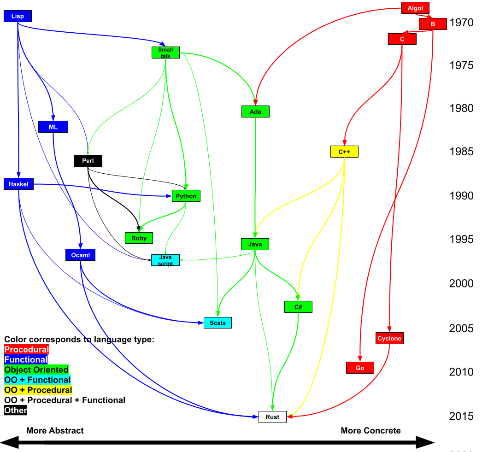

Why Rust
Rust is designed to be a safe, productive, and performant general-purpose programming language.
In that space there is a lot of competition. New language since c has ever really taken over that space. C++, Python, Java, and C# have each, carved off a piece of that space. But none of them have ever really been able to be the best in all of the different niches.
To even carve off a portion of this space is quite a challenge because any new language has to be better than the best language out there for a given usecase. It can't be just a little bit better either. It has to be a lot better, because there are huge switching costs. Libraries need to be rewritten. People need to be retrained. To gain traction a new language needs to be a lot better.
Rust is a lot better.
Rust is still very young but it's starting to compete with other languages on their own terms. Some have argued that may soon be better for web development than Javascript. And in many ways it is already a better C++ than C++. But, as I will argue in this book: Rust is a better Java than Java.
I decided to write this book because a lot of the Rust documentation was written in a way that was geared towards people coming from C++. If you know about pointers, memory layout, and RIIA are second nature to you, then these explanations make sense. I wanted to go in a different direction describe Rust from the perspective of Java. As such, this book won’t mention any of those things, and will describe and define how Rust work from the perspective of a Java developer. This book is first and foremost targeted at developers who already know and have experience in Java and are looking to learn Rust. If this is not your situation you might still get a fair amount out of this book but it is not my goal.
Throughout, the book will provide side-by-side comparisons of Java and Rust code that is identical in functionality. Because the goal is to facilitate comparison between the languages sometimes the examples are not idiomatic Rust or idiomatic Java. Rather they are written to make the comparison clear and direct.
Throughout the book we’ll have running commentary from two characters:
|
|
|
|
|
|


History of Rust
|
The Beast adopted new raiment and studied the ways of Time and Space and Light and the Flow of energy through the Universe. From its studies, the Beast fashioned new structures from oxidised metal and proclaimed their glories. And the Beast’s followers rejoiced, finding renewed purpose in these teachings. -- The Book of Mozilla, 11:14 |
Prehistory
The history of programming is one of ever increassing levels of abstraction. Electrial signals were abstracted into instructions. CPU instructions were abstracted by assembly languages. The next innovation was proceedural programming. This provided a layer of abstraction helps avoid errors in flow control. Soon after their creation soon almost all programing was done in proceederal languages.
Proceedural programming is great for reasoning about flow control, but the introduction of variables which provide a useful name and abstract over registers and memory addresses intruduces a source of potential problems: It is often desireable or nessicary to have two variables refer to the same thing, and it is possible to forget that is the case. This seems subtle at first, but this problem of shared state, speffically shared mutable state, has become the root of most bugs.
It might not seem obvious that this is the case, after all it's usually simple enough to keep things strait. But shared mutable state manifests in a lot of different ways. In C++ these show up as:
- Dangling pointers
- Use after free bugs
- Segfaults
- Iterator invalidation
In Java you see:
- Null pointer exceptions
- Concurrent modification exceptions
- Race conditions
- The need for synchronized blocks
- The need for a garbage collector
- The need for a JIT compiler because many optimizations can't be reasoned about from the code
There were two major responses to dealing with the problem of shared mutable state. Functional programming which sought to remove the mutability, and write code using only immutable shared data. Object oriented programming which sought to use encapsulation to prevent state from being shared, while maintaining mutability.
Both approaches have been developed over the course of decades. Now they both work quite well. However they usually don't work together. Because if nieevly combining ideas from the two results in shared mutable state, which loses the benefit of either approach. So while there have been many ideas that have crossed over from OO languages to Functional languages and vice versa, the have been limited and adapted to the language they are in, and in general don't achieve the same effect they do in the language they came from.
The most important idea in Rust is to go beyond this dichotomy. By allowing state to be mutable and shared, but not at the same time Rust can bring the full power of Object Orientation and Functional programming to bare in the same language at the same time. This allows for:
- Memory safety without Garbage collection
- High level abstraction without overhead
- Compile time prevention of all NPEs, CMEs, Resource leaks, and Race conditions. More importantly Rust opens the door to future paradigms and design patterns that just wouldn't be practical in other languages because they would be too error prone.
History of Rust
Work on Rust began in earnest in 2009 at Mozilla based on a prototype that Graydon Hoare had been working on for a few years previously. After three years of development the first pre-alpha version of the compiler was released in 2012.
Shortly after the first release Graydon stepped back from the project. This change was a hugely important milestone, because it allowed other people step up. This allowed the project to move to a open governance model, with many people providing different perspectives. Over the next three years the language changed, a lot. New features were added and more importantly several features were removed or moved into third party libraries. These changes dramatically improved the language, because it turns out a lot of ideas that sound great don’t turn out so well in practice.
Rust’s evolution because changes were always anchored in very practical concerns as the core team spent most of their time working on Firefox. (a 4.4 million line C++ code base.) Eventually, in 2015 Rust 1.0 was released. This marked the first point where code could be written and still compile later. This marked a major change from pre-1.0 where if code that was more than 6 months old, you might as well rewrite it because the language was changing so quickly.
Since 2015 many features were added or modified, or moved out into libraries, but compatibility was always maintained. However overtime, things arose that would be better if compatibility could be broken. So to maintain their release frequency, and to avoid getting stuck in the compatibility trap that a lot of languages find themselves in, the Rust project team settled on a release system, where compatibility would with old versions would be maintained, but every three years a backwards incompatible changes would be introduced in a new ‘epoch’. The ‘epoch’ is specified explicitly and multiple different ones can co-exist in the same program. So the language can be stable, but without stagnating.
As of this writing the latest version is the 2018 release which contains a lot of improvements over Rust 1.0. It has been a rare pleasure to watch Rust continue to make rapid and significant improvements even as it’s usage grows. I believe this is a big part of why it was voted the “Most Loved Language” in the StackOverflow developer survey in 2016, 2017, and 2018. The percent of developers who have used it has grown each year, and the percentage of those who ‘love it’ has grown each year also.
As the name implies Rust isn’t about new ideas. It’s about taking well established and vetted ideas, and putting them together in a coherent way. Almost nothing in Rust is completely original. So in this guide you will see lots of familiar concepts, but they fit together very well. In large part this is due the fact that during its history Rust very aggressivly explored a lot of possible design space. It has had a very fast release cycle, and gone through many rounds of expermentation, design and redesign. The features that have landed have had tremendious amount of thought put into how they fit in and work together and in most cases many alternitive approaches were tried and rejected.
Geneology of Rust
Below is a chart of what languages influenced which other languages. Arrows go from the influencing language to the one influenced. Time moves from top to bottom. The left-right axis represents how abstract vs concrete the language is. Finally the languages are color coated by their type.

While it might not be immediately obvious from looking a random code sample. As can be seen in the genealogy above, that Rust and Java are actually closely related. Rust draws heavily from Java's most influential predicessor C++ as well as C# which was very heavily influenced by Java. Java's philosophy of safety is also present throughout Rust.
Java was the first popular language to embrace the idea of safety. Unlike lower level languages Java prohibits users from directly manipulating memory or doing other dangerous operations, and unlike a lot of other high-level language is it has a strong type system which ensures that you don't get errors at runtime that could be caught earlier. Rust takes this idea of safety and really runs with it. It aims to prevent as many bugs as possible from reaching production by making incorrect code impossible to write. So like Java it prevents use of uninitialized memory, dangling pointers, use after free, memory leaks. Similarly Rust also provides exception safety, and prevents type errors through static type checking with generics. But Rust goes further and also prevents iterator invalidation / ConcurrentModificationExceptions, null pointers, resource leaks, ordering bugs due to static initialization or partial initialization, and data races in multi threaded code.
Rust’s primary goal is to prevent errors. If it is possible errors should be prevented at compile time.
|
|
|
Portability Java has a goal that you should build your code once and be able to run anywhere Rust doesn't quite have the same goal: it has the goal that you should be able to write your code once, compiler it many times, and have it run almost anywhere. Rust compiles to native code on each platform it supports which as of today is 23 CPU architectures, Windows, MacOS, Linux, Bsd, all major web browsers, Android, iOS, and even several different micro controllers. Part of the reason that Rust is able to be ond so many architectures is that it is self-hosting. The Rust compiler is written in Rust. The standard library is also written in Rust and it depends on very little native code. Rust even brings its own memory allocator. Because Rust compiles using llvm, as long as there is an llvm target available for a system, Rust can target it.
Performance Usability
- Be a Good language
- Safe, concurrent, practical
- We can have nice things: https://blog.rust-lang.org/2017/03/02/lang-ergonomics.html
- Be usable
- Many platforms
- Package management
- Build system and test harness
- Fast enough that you won't need anything else.
- Pillars of rust
- Speed without wizardry
- http://fitzgeraldnick.com/2018/02/26/speed-without-wizardry.html
- Memory safety without garbage collection
- Concurrency without data races
- Abstraction without overhead
- Stability without stagnation
- No unexpected changes to language and functionality
- Across versions
- By depending on something
- No unexpected changes to language and functionality
- Hack without fear.
- Confident systems programming
- Rust: fast, reliable, productive—pick three.
- Zero cost abstractions
- 4 compiler optimization phases.
- Normal code is just as fast as unsafe if you can explain to the compiler why it is safe
- Zero size types mean hashMap<k,()> == set<> with not overhead.
- Speed without wizardry
- API guidelines https://rust-lang-nursery.github.io/api-guidelines/
- https://deterministic.space/elegant-apis-in-rust.html
- Don't use booleans in API use named enums. It is more readable at the call site.
- Rust is implemented in Rust.
- Look at String, or Vec, or Exceptions, or Channels or anything else, it’s written in pure rust.
- THere are a number of primitives but all of the standard library is built on just these primitives. It doesn’t break out into some other language or ‘native’ code.
- For example, you can perform a lot of fancy operations on Strings. But a lot of those actually just come from iterator, which automatically provides a lot of functionality for types that implement it. But Strings implementation of iterator isn’t some special native code, in fact String itself is just a Vec of UTF-8 characters. Vec is itself is a struct.
- This allows Rust to be compiled and built in Rust, but more importantly it has forced those primitives on which the language is build to be sufficiently robust and flexible to support everything above them. And when one of those basic building blocks improves, everything above them benefits.
- Rust itself if a somewhat complicated language. It has a lot of features, more than Java (Though not as many a c++). But this is everything. The standard library is built using just these primitives, and compared to most languages (Especially Java) it’s standard library is small. Most of the features are developed externally to the language itself. Even things you wouldn’t necessarily expect, like Non-blocking IO, Concurrency support, and even Exceptions.
- This allows these components to be versioned independently and evolve more quickly than the language itself. It also allows competing libraries to replace them when they have a superior design.
- Key to making this work is a built in dependency management system: Cargo. There will be a full chapter on it later.
- Culture of documentation
- Culture of testing
- Culture of inclusivity
- Clippy
What makes a good language?
- Code can be imagined as shapes
- Width is interface complexity
- Depth is complexity of problem
- Volume is proportional to code volume
- Some languages are more concise and others more verbose, but this doesn't matter
- Narrow and Deep is better
- Too shallow is worse than useless
- The best language is the one in which you write the best code.
- Code can have problems:
- Redundant
- Interface covers things the impl doesn't
- Interface is complicated
- Poorly factored
- It is better if a language allows you to make three transformations
- Factor out code
- Generalize
- Refine interface (eliminate unsupported features)
- Shrink width (reducing impl)
- Shrink interface preserving volume.
- A language feature is good if it let's you do these things.
- It is bad if it causes the reverse
- Example: exceptions and futures together.
- It is bad if it causes the reverse
- Some languages enable all the things, others say none of them
- To decide which are good think in terms of a standard library.
- Where to draw the line?
- To the left slows discourages improvement by impeding replacement and slowing development
- To the right causes distribution issues.
- For Java including a large stdlib was great… at first
- Today we have deps management tools. So j2ee and similar things are now out. If this were the norm in 1995 java would be different.
- This refactoring visualized
- From the perspective of any given developer
- Language features and the stdlib and the languages interface.
- A language is just like any other program, it's just more important to get right.
- It is bad if It has coupling with other features, causing the interface of the language, or worse application code to expand. (For this reason it is important that features be orthogonal and well factored) this is true of all interfaces but for a language it is more important because they have a lot of dependant code.
- Causes ambiguity about what something does
- Is easily confused with another feature/behaviour in the same language
- Introduces inconsistency: An internal library can do something but a user library can’t copy that code and have it work
- Forces additional complexity anywhere it isn’t used
- Introduces a source of potential bugs
- Causes a runtime failure, in the event that the user’s code is using it incorrectly
- Makes errors go undetected
- Forces repetition that can’t be factored out
- So a feature is good in a language if adding it:
- Hide a lot of complexity behind a simple interface (ie: is just good code)
- If it can't be implemented in application code and be effective. (Note this may be a red flag, as we want the minimal set)
- Shrinks the overall interface by allowing code to be moved out. (As in the above example)
- If it allows external code to shrink their interfaces
- If it allows for external code to refine their interfaces
- Serves can’t be met by normal library or application code
- Moves bugs from latent to explicit, or from runtime to compile time
- Great features:
- Interfaces and polymorphism
- Generics
- Constraint Based Generics and Parametric Polymorphism
- Symbols for complex but well defined tasks that can be plugged into
- enhanced for loop
- Try / with resources
- Functional interfaces
- Exceptions
- Algebraic Types and Type-safe Failure Modes
- Rust feature: Algebraic Types and Type-safe Failure Modes (more on this later)
- Type Inference
- Rust uses the Hindley-Milner type system, which is considered the best at this.
- Immutability
- Better: Immutable by default.
- Even better: Marking when data is modified.
- Pattern Matching and Compound Expressions
- Isolating dangerous / low level operations
- https://yager.io/programming/go.html
The Rust Community
Rust is known for having a very helpful community. You can see dozens of links different community spaces prominently featured on the Rust homepage. This is a pretty big contrast to a lot of programming communities. In many languages there either isn’t a recognisable community, or there is one, but it can be unwelcoming or outright hostile to beginners.
A big part of this is that Rust was born out of Mozilla, which has a lot of experience managing open source communities. They established a code of conduct, a moderation team, user groups, forms, and open source development teams.
Another aspect it the language itself. Rust’s learning curve is both initially steep and long. Fortunately this process isn’t painful because the difficulty does not come from ‘magic’. Rust is very explicit and almost everything works exactly the way you’d expect. Rather it comes from learning to work within the safety rules. It is sometimes complicated and isn’t similar to other languages. But this has a way of keeping people humble. In a lot of other languages, it’s easy to forget that things that seem second nature now used to be confusing.
So in some languages, you might be mocked for asking for help, or be unable to find it, or write what you think is right only to have things break at Runtime. With Rust, you might have to ask for help more or work harder to get things to compiler. But you’ll find lots of people will be happy to help. And once your code does compile, you can be fairly confident it is correct.
RFC process
TODO:
- Pluralism and positive sum game (multiple sources of authority working together)
- Different perspectives reach a better solution
- Yelling lowder and ‘thicker skin’ is bad because it does not bring new insight
- https://aturon.github.io/2018/06/02/listening-part-2/
- Humility, empathy, and introspection
- Discuss
- Pre-rfc
- RFC
- Impl
- Nightly
- Crater to rebuild to world
- Beta - through release
- No new reasoning
- Committees and many perspectives.
Variable declaration
Below is an example of a variable being declared in Java and the equivalent expression in rust.
#![allow(unused_variables)] fn main() { let foo : i32 = 5; }
int foo = 5;
The keyword letis used to indicate you are declaring a variable. This is followed by the variable name, then a colon and then the type.
The reason Rust puts the type one the right is because the type is optional anytime it can be inferred by the compiler. Which means that most of the time we can just write:
#![allow(unused_variables)] fn main() { let foo = 5; }
The equals sign for assignment works the same way it does in Java. Primitives also work the same way but they have different names. Below is a table to help:
| Java | Rust |
|---|---|
| long | i64 |
| int | i32 |
| short | i16 |
| byte | i8 |
| double | f64 |
| float | f32 |
Rust also supports unsigned integers these cannot be negative and use their highest order bit to represent higher numbers just like any other bit. The range of values that can be represented in each is listed in the table below.
| Type | Min | Max |
|---|---|---|
| u8 | 0 | 2^8-1 |
| u16 | 0 | 2^16-1 |
| u32 | 0 | 2^32-1 |
| u64 | 0 | 2^64-1 |
| u128 | 0 | 2^128-1 |
Constants can also explicitly specify their type. (Similar to Java) The examples below are equivalent.
#![allow(unused_variables)] fn main() { const SECONDS_PER_MINUTE : i64 = 60; }
static final long SECONDS_PER_MINUTE = 60;
By default all variables in Rust are final. So instead of a final keyword there is the mut keyword to indicate the variable is mutable (non-final). For example:
#![allow(unused_variables)] fn main() { let mut counter = 0; }
The advantage of using mut rather than final (besides being fewer characters) is it makes the declaration is far more likely to be accurate. In Java it very common to simply omit the final keyword even when a variable is final. As a result when reading Java you often don’t know if a variable is final or not.
|
|
|
A ‘final-by-default’ policy makes reasoning about code a lot easier, because you know if something is going to change. This makes writing multi-threaded code easier, because if something is immutable can always be shared safely between threads. (We’ll come back to this in a later chapter).
Common types
There are some common builtin types that appear in a lot of the examples. The details of each will be explained later.
Box
The first and most embarassingly simple of which is Box. Box is a collection of exactly one item. (It can't even be empty) It's just a wrapper around a generic value. If you were to implemente Box in Java it would look like this:
class Box<T> implements Iterable<T> {
private final T item;
public Box(T item) {
this.item = item;
}
public Item getItem() {
return item;
}
@Override
public Iterator<Item> iterator() {
//...
}
}
You may be wondering: "Why would I ever need such a useless class?". Usually you don't. But it comes up as a to work around some restrictions. These cases will be explained when they come up.
Declaring a box is done like this:
#![allow(unused_variables)] fn main() { let boxed = Box::new(1); // or if you want to be explicet about the type let boxed2 : Box<i32> = Box::new(2); }
The :: operator in the example above acutally does exactly the same thing it does in Java. It is how you can refer to a static method without invoking it. IE: Arrays.sort(stringArray, String::compareToIgnoreCase); but in Rust, once you have a method reference instead of calling method.run() or method.call(arg) you can just invoke it: method() or method(arg). So Box::new refers to the constructor of Box just like it would in Java, and the (1) following it invokes the method passing the argument 1.
Vec
Rust has a built in type called Vec which is short for "Vector". It is equivlent to Java's ArrayList. However because Rust does not have "primitive wrapper" types like Java's "Integer" and "Byte" (as opposed to "int" and "byte") and is capable of putting primitives in collections directly without any overhead Vec receives a lot more use in Rust than ArrayList does in Java. It is often used in places where in Java you would use an array or 'Collection'.
The syntax looks like this:
#![allow(unused_variables)] fn main() { fn get_numbers() -> Vec<i32> { vec![] } let mut numbers : Vec<i32> = get_numbers(); numbers.push(5); //Pushes 5 onto the vector. (vec will automatically resize if needed) }
Because adding layer of abstraction does not add any overhead in Rust it is common to pass a Vec<u8> where you would use a byte array in Java.
String
Rust has a string type. It's a little different from Java's. While Java's String is built out of a char[] where each char is a UTF-16 code point, Rust's String is based on a Vec<u8> where the bytes are valid UTF-8.
This has advantages for size and serialization. But the real gain is that Strings can be mutable if desired. If is declared with let mut directions : String = ... it is mutable, and if it is declared with let name : String = ... it is not.
Of course, passing around mutable Strings would be error prone in Java. We'll cover why this is not a problem in Rust in the chapter on Ownership.
Method Signatures
Below is a Java method signature and the equivalent rust signature.
void printNum(int num);
#![allow(unused_variables)] fn main() { trait Example { fn print_num(num: i32); } }
Things to notice: The Rust method starts with the keyword “fn” this simply indicates that a function is being declared. This is followed by the method name and each of the parameters to the method in parentheses. Unlike Java where the type appears on the left followed by the argument name, in Rust the name comes first followed by a ':’ followed by the type. (Similar to how variables are declared)
If the function had a return value it would be declared on the right hand side like this:
int add(int a, int b);
#![allow(unused_variables)] fn main() { trait Example { fn add(a: i32, b: i32) -> i32; } }
There is no “void” in Rust. If there isn't a return value, just don't provide one.
Just as in Java the method body is in between the curly braces.
int add(int a, int b) {
return a + b;
}
#![allow(unused_variables)] fn main() { fn add(a: i32, b: i32) -> i32 { return a + b; } }
Borrowing
In Rust a variable can also be “borrowed”. When the parameter to a method is borrowed, it means the method promises not keep the parameter after the method has returned. Or anything it obtained from the parameter.
A method that takes a borrowed parameter cannot assign the parameter to a member variable. Also it can only pass that parameter to other methods which also borrow it. (Otherwise it would be able violate its contract indirectly.)
|
|
|
To indicate a parameter is borrowed, in the method signature, place a “&” in front of the type.
As an example, in Java you might define a method 'isSorted’ like this
boolean isSorted(List<Integer> values);
that returns a boolean indicating if a list is sorted. In Rust you would add an ‘&’ in front of the type in the method signature to indicate that it will not retain any references to the list or it's contents when the method returns.
#![allow(unused_variables)] fn main() { trait Example { fn is_sorted(values: & Vec<i32>) -> bool; } }
It is helpful to think of 'borrowed’ as being part of the type. IE “The method takes a borrowed list.”
This declaration provides a strong and useful guarantee to the callers of a method.
Of course it would be worthless if in a newer version, the method just deleted the ‘&’ from it's signature and removed the guarantee. To prevent this, and to make the guarantee explicit in the caller's code, when a method is being invoked; When a method that borrows a parameter is invoked, the caller puts an ‘&’ in front of the variable name being passed in. For example
#![allow(unused_variables)] fn main() { fn is_sorted(values: & Vec<i32>) -> bool { true } let values = vec![1, 2, 3]; if (is_sorted(&values)) { //... } }
This is only needed if the variable being passed isn't borrowed already. (Otherwise it would be redundant, because it can only pass it to methods which borrow it.)
Passing a parameter to a method that borrows is sometimes referred to a the parameter being “lent” to the method.
Mutability
In Java a variable can be declared final. This means the value cannot be reassigned. It however does not guarentee that its contents won't change. For example if you have the method:
void process(final List<Foo> toProcess);
You can't tell from looking at the signature if the toProcess list will be modified or if the individual items in the list will be modified.
Rust avoids this ambiguity with the keyword mut. All values are unmodifyable by default, and if the variable or any of its contents are going to be changed it is prefixed with the mut keyword for eample:
#![allow(unused_variables)] fn main() { let mut value = 0; value += 10; }
Similar to variable declaration, if you want to modify a borrowed parameter, you use the 'mut’ keyword. This goes right in front of the type.
void populateCounts(HashMap<String, int> itemCounts);
#![allow(unused_variables)] fn main() { use std::collections::HashMap; trait Example { fn populate_counts(item_counts: &mut HashMap<String, i32>); } }
mut can be thought of a part of the type. IE “a borrowed mutable Hashmap” as opposed to “a Hashmap".
When 'Borrowed’ is combined with 'mut’ the ‘&’ goes first. If you wanted to write a method to sort a list, it would take a borrowed mutable list.
#![allow(unused_variables)] fn main() { trait Example { fn sort(names: &mut Vec<String>); } }
This signature means sort() may change the list, but only during the invocation of the method and will retain no references to the list or its contents once the method returns.
Javadocs
Documentation is an area where Rust and Java are very similar. In Java you might add a javdoc like this
/**
* Computes an approximation of {@code 1/sqrt(a)} segnifigantly faster.
* However compared to using {@link java.lang.Math.sqrt()} the result is much less accurate.
* @param a the value to compute the inverse square root of.
* @return an approximate inverse square root of the passed parameter.
*/
public double fastInvSqrt(double a);
which can be automatically translated into HTML documentation.
Rustdocs
Rust has rustdocs which work similarly. You could write the following:
/**
* Computes an approximation of `1/a.sqrt()` segnifigantly faster.
* However compared to using [`sqrt`] the result is much less accurate.
* # Examples
* ```
* let a = 7.0_f64;
* let exact = 1.0 / a.sqrt();
* let approx = a.fast_inv_sqrt();
* assert!((approx-exact).abs() < 1e-5);
* ```
*/
Or instead of “/**” and a block comment, you can use “///” and line comments. So the following is equivalent:
/// Computes an approximation of `1/a.sqrt()` segnifigantly faster.
/// However compared to using [`sqrt`] the result is much less accurate.
/// # Examples
/// ```
/// let a = 7.0_f64;
/// let exact = 1.0 / a.sqrt();
/// let approx = a.fast_inv_sqrt();
/// assert!((approx-exact).abs() < 1e-5);
/// ```
(This helps with small comments as it doesn't require an extra line at the top and bottom.)
Javadocs have a number of common tags such as “@param” and “{@link }”. Below are some common ones and their Rust equivalents.
| Type | Java | Rust |
|---|---|---|
| Link to method | {@link Foo#bar() } | [`Foo::bar()`] |
| Link to URL | <a href="https://google.com"> google</a> | [google](https://google.com) |
| Code snippit | {@code foo.bar()} | `foo.bar()`or ```foo.bar();``` |
| Parameter | {@param foo bla bla} | N/A Documented through examples and code snippits |
| Return | @return bla bla | N/A Documented through examples and code snippits |
| Examples | <pre> {@code //... } </pre> | # Examples ``` //...``` |
| See also | {@see "Bla bla"} | # See Also Bla bla |
| Custom tag | Requires custom javac args | # My custom section //... |
| Bulleted list | <ul> <li>one</li> <ul> <li>one point one</li> </ul> </ul> | * one** one point one |
Difference between Javadocs and Rustdocs is that to do formatting, in Java you would inject HTML tags, where as in Rust you use Markdown syntax. So the following Javadoc and Rustdoc are equivalent __ vs __. As you can see this improves readability a lot.
To generate an view your docs you can run _. Which will put the documentation in _. When you publish your code to Crates.io (Rust’s main package repo, the docs will be published automatically.) There will be more on Crates.io and the Cargo command in chapter _.
Additional information for the doc can also be placed inside of the method, if for some reason that makes more sense from an organization point of view. So the following are equivalent __ and __.
Docs can also be hidden (If for example a feature is still being tested) like this __. Similarly you can use the _ annotation to mark them as being platform specific. For example __.
It is common practice in Rust to write a small example for how to use each function rather than documenting all of the input and output parameters like you would in Java. So instead of __ you might write __ in Rust. These examples aren’t just for show, they also get automatically turned into unit tests. For example __. This makes sure your documentation stays up to date with the code. If you want to hide a few lines of setup at the top of an example you can use _. For example __.
Macros
Ok, let’s finally get around to writing HelloWorld:
/// Prints "Hello world!". fn main() { println!("Hello World!"); }
You may be wondering: “What is that exclamation point doing at the end of that function name?” The answer is 'println!’ is not a normal function it is what is called a “Macro”. Rust macros are "hygienic" so they don't have the horrifyingly dangerous properties of C and C++ macros, and are designed to be safe.
You can think of macros as a function that does things that functions can't normally do. In this case ‘println’ supports string templates.
fn main() { let name = "Ferris"; println!("Hello {}!", name); }
|
|
|
|
|
|
|
|
Another place you'll see macros, is for initilizing collections or places where you might find "varargs" in Java. For example you can initilaize a Vec with the vec! macro:
#![allow(unused_variables)] fn main() { let number = vec![1, 2, 3, 4, 5]; }
Flowcontrol
Similar to Java in Rust variables are defined to exist in the scope where they are declared. So you can do this
#![allow(unused_variables)] fn main() { let mut i = 0; while i < 10 { println!("Counter: {} ", i); i += 1; } }
but not this:
This is a bug because |
|
Rust has return keyword, which works exactly like java:
int square(int x) {
return x * x;
}
#![allow(unused_variables)] fn main() { fn square(x: i32) -> i32 { return x * x; } }
However in Rust expressions will return the last value in them if it is not followed by a ; so you can just write:
#![allow(unused_variables)] fn main() { fn square(x: i32) -> i32 { x * x } }
This also holds true for things like if statements
#![allow(unused_variables)] fn main() { fn something() -> bool {true}; let x = if something() { 1 } else { 0 }; }
is equivalent to
int x;
if (something()) {
x = 1;
} else {
x = 0;
}
or
int x = something() ? 1 : 0;
in Java.
Note that the parenthesis around an if or while conditional are totally optional. Because in Rust the conditional is just an expression in Rust, just like any other.
Below are examples of If, for, and while loops compared to their java equivalents. __ and __.
| Rust | Java |
|---|---|
if _ { _ } else { _ } | if (_) { _ } else { _ } |
match _ { _ => _ } | switch (_) { case _ : _ break; } |
while _ { _ } | while (_) { _ } |
loop { _ } | while (true) { _ } |
for i in _ { _ } | for (X i : _) { _ } |
for i in 0..n { _ } | for (int i = 0; i < n; i++) { _ } |
break / break 'label | break / break label |
continue / continue 'label | continue / continue label |
return _; | return _; |
There are a few differences: Rust does not have do/while loops. In Rust the match statement can use pattern matching and the cases do not "fallthrough" like switch in Java, so there is no need for a break.
The Rust for loop works like java’s “new” for loop, and doesn’t have the C style 3 part condition version.
for (String item : collection) {
//...
}
#![allow(unused_variables)] fn main() { let collection = vec![1,2,3]; for item in collection { //Item's type is infered //... } }
If you want to write a pattern like that, you can use a “range” operator instead.
#![allow(unused_variables)] fn main() { for i in 0..10 { //... } }
The ".." operator produces an iterator between the value on the left and the one on the right (inclusive and exclusive). Rust also has a “loop” loop which is equivalent to while (true) in Java. The keywords break and continue work the same way they do in Java.
while(true) {
//...
break;
}
#![allow(unused_variables)] fn main() { loop { //... break; } }
Notice that the if, while, and for conditional arguments are just normal expressions that return a boolean. (As opposed to Java where it is a special construct surrounded by parenthesis). And because anything surrounded by curly braces is an expression which returns the last expression inside of it, it is possible to write a loop like conditional like this:
#![allow(unused_variables)] fn main() { let mut i = 1; while { i = i*2; i < 65536 } { //... } }
here the code is iterating over the powers of 2, but the code to update the variable i has been put in the top as part of the loop conditional. (The purpose of showing this is not to encourage doing this all over the place, but rather to show how the compiler sees things)
Functions as arguments
In Java sometimes you pass functions as arguments. With a named function this is doen like this:
Stream printableElements = stream.filter(Element::shouldPrint);
The Rust equivalent would be do this:
#![allow(unused_variables)] fn main() { struct Element(); impl Element { fn should_print(&self) -> bool { true } } let stream = vec![Element()].into_iter(); let printable_elements = stream.filter(Element::should_print); }
Which usses the same :: syntax.
Java can also create an “Anonymous function” (So called because it don’t have a function name) or “Closure” (so called because they can refer to local variables in the surrounding function) like this:
Stream printableElements = stream.filter(e -> e.shouldPrint());
// or
Stream printableElements = stream.filter((e) -> {
e.shouldPrint();
});
In Rust the syntax is:
#![allow(unused_variables)] fn main() { struct Element(); impl Element { fn should_print(&self) -> bool { true } } let stream = vec![Element()].into_iter(); let printable_elements = stream.filter(|e| e.should_print()); // or let stream = vec![Element()].into_iter(); let printable_elements = stream.filter(|e| { e.should_print() }); }
Here the | characters replace the parentheses and the curly braces are optional if there is only a single statement.
Memory safety and GC
Like Java, Rust has automatic memory management so you never have to worry about explicitly allocating or deallocating objects. However unlike Java it does not have a garbage collector. This may sound like a contradiction but it's not.
It turns out, not coincidentally, the same static analysis that solves the problem of allowing sharing or mutability but never both, also solves the problem of perfect garbage collection.
One way to think about it is to think of Rust as having compile time garbage collection. The compiler works out where in your code objects are no longer used automatically generates the necessary code to deallocate them.
So like Java this means Rust does not suffer from memory leaks, use-after-free bugs, dangling pointer bugs, or buffer overflows that plague most compiled languages. At the same time Rust does not have the overhead of garbage collection or the associated runtime which has prevented languages like Java and C# from reaching the performance of C++ in “object heavy” applications.
Ownership
To explain how Rust achieves automatic memory management without garbage collection and a number of other more advanced features we need to first explain Ownership.
Ownership is a common pattern in programming in any language even though it really isn’t a part of most languages themselves. It’s best to see this through example. In Java compare the method addAll on TreeSet to the static method Collections.sort. Both provide ways to sort a list of items by passing it into a method, but the contract of these methods is quite different. In the case of the TreeSet.add ownership of the values is being implicitly transferred to the TreeSet. The caller should not hold onto references to the items added to the Set. If they want to modify one of the items they should first remove it from the set. Otherwise the change could affect the of sort order and break the TreeSet resulting in undefined behavior. On the other hand Collections.sort does not have this restriction. In fact it is implicit in the contract of the method that the implementation won't hold onto references to the items passed after the method returns. If the implementation of sort were to modify the the list after it returned it would surely break the caller's code. Collections.max is similar but it has the additional implicit assumption that it won't modify the passed list.
In Rust these assumptions are explicitly declared as part of the method signature. So if in Java we were to declare integer speffic versions on each of these, it would look like this:
public interface IntegerSet {
//...
public void addAll(List<Integer> list);
}
public static Integer max(List<Integer> list) {
// ...
}
public static void sort(List<Integer> list) {
// ...
}
in Rust an equivlent method are declared as:
#![allow(unused_variables)] fn main() { pub trait MySet { //... fn add_all(list: Vec<i32>); } fn max(list: &Vec<i32>) -> Option<i32> { //... list.iter().cloned().max() } fn sort(list: &mut Vec<i32>) { //... list.sort(); } }
Notice that the type of the argument changed. When it is just Vec<i32> the method is taking ownership of the value.
But when it is &Vec<i32> it is a borrowed vector, meaning the caller still retains ownership. And a &mut Vec<i32>
is a borrowed mutable vector meaning that even though the function is not taking ownership, it may modify the provided vector.
For any given object there is one owner. When that variable is reassigned or goes out of scope the value is dropped. This applies transitively. For example in the function:
#![allow(unused_variables)] fn main() { fn process(items: Vec<String>) { //... } }
when the function returns, the vector items and all of the strings in it will be dropped from memory.
This might seems like it doesn’t allow cycles. There are ways to create cycles, but for the most part they aren’t needed. Why this is the case will be covered later in “How Rust makes you a better Java programmer”.
The main tool that used in conjunction with ownership is borrowing.
Borrows
- Output to be populated
- Sort example
- Also called reference (Not the same as a C++ ref, more like a smart pointer)
- Primitive (copy by value) vs pointer
- Copy vs move (is similar)
In addition to compile time memory management and guaranteed thread safety), explicit ownership opens up a lot of useful patterns.
In Java a common pattern is to pass around a byte array with a offset and length to provide access to a part of an array without making a new copy. For example see java.io.OutputStream.write(byte[] b, int off, int len) or java.io.FileInputStream.read(byte[] b, int off, int len). In Rust you can use slices. So you can write
#![allow(unused_variables)] fn main() { use std::io; use std::io::prelude::*; let mut output = io::stdout(); let buffer = vec![1, 2, 3, 4, 5, 6, 7, 8, 9, 10]; output.write(&buffer[2 .. 8]); }
which passes a segment of a byte array to the write function. In addition to convince and performance, it allows you specify if the slice is being passed can be written to or just read from have this enforced by the compiler. So if you have a function that looks like this:
#![allow(unused_variables)] fn main() { pub struct MyConfig(i32); pub fn apply_config(config : &MyConfig) { //... } }
you can be sure that the config object won’t be changed by passing it to the function. No defensive copies required. Similarly, above the caller is guaranteed that output.write(&buffer) won’t modify the contents of the buffer.
Borrowing also works with loops. When using a for loop to iterate over a collection, you can either pass the for loop the collection itself
#![allow(unused_variables)] fn main() { let strings = vec!["foo", "bar", "baz", "bat"]; for value in strings { println!("Hello {}", value); } }
consuming the collection in the process, much a like a stream in Java. Or you can let it borrow the collection
#![allow(unused_variables)] fn main() { let strings = vec!["foo", "bar", "baz", "bat"]; for &value in &strings { println!("Hello {}", value); } }
If the collection is borrowed then inside the loop each entry will itself be borrowed. This is actually a important feature. In Java a for-each loop can't take an iterator only an iterable. This is because if it did you could write
Iterator<String> iter = //...
for (value : iter) {
//...
}
for (oops : iter) {
//Can't get here...
}
the second loop wouldn’t make any sense because it can’t get any data because there is no way to invoke .iterator() again and reread the data. For this reason Java introduced a second concept ‘streams’ which don’t work with for loops. Because there was no way to convey to the compiler that the for loop will consume the values it's iterating over, Java had to create two separate concepts stream and iterator that don’t work together. You can either write
List<Foo> foos = //...
for (Foo f : foos) {
if (meetsCriteria(f)) {
process(f);
}
}
or you could write
List<Foo> foos = //...
foos.stream().filter(f -> meetsCriteria(f)).forEach(f->process(f));
but you can’t mix these ways of coding. In Rust this can be conveyed by either passing or lending the collection to the for loop. This allows the concepts of stream and iterator to be unified into a single simple interface and work with for loops without the risk of accidentally reusing the consumed stream allowing you to write:
#![allow(unused_variables)] fn main() { struct Foo(i32); fn get_foos() -> Vec<Foo> { vec![Foo(1), Foo(2)] } fn meets_criteria(f : &Foo) -> bool { true } fn process(f : Foo) {} let foos : Vec<Foo> = get_foos(); for f in foos.into_iter().filter(|f| meets_criteria(f)) { process(f); } }
In addition to these there are a bunch of other common patterns.
#![allow(unused_variables)] fn main() { trait Example { fn read_from_buffer(&self, buffer : &[u8]); } }
Here a method is borrowing a parameter but it's not modifying it. When is the messages returned your guaranteed it is not still holding onto it.
#![allow(unused_variables)] fn main() { use std::path::Path; trait Config { //... fn get_storage_location(&self) -> &Path; //... } }
Here an accessor method is lending the caller some of the object's internal state (in a read only way) the calling code cannot invoke any further methods on the object until it drops the reference to the data that was returned from this method. This is a great pattern for simple accessors that would not be safe in Java because they would be exposing the internal state of the class and potentially violating it's invariants. While it may not always be a good idea to expose internal representation, this provides a way to do it safely that does not violate the integrity of class, and still allows the implementation to change in the future. (It can always construct the returned object if needed)
#![allow(unused_variables)] fn main() { use std::collections::HashMap; trait Config { //... fn set_attributes(&mut self, attributes: HashMap<String, String>); //... } }
here the set_attributes function is making explicit that when called it is now the owner of the provided attributes
and the caller no longer has any references to it. In Java would be dangerous. Usually to prevent this a defensive copy
is made. However this comes at a performance cost. To avoid this sometimes Java programs just skip it because the transfer
of ownership is understood and users know not to do this. For example when inserting an object into a HashSet, it is understood
that you should not modify the object afterwards. But nothing actually prevents this.
TODO:
- Similar pattern getting an entry by key and doing .or_insert() += 1.
The rules for ownership and borrowing are straight forward: __
...
There are more exotic ways to handle objects then in general aren't really needed the overwhelming majority of the time. These include RC (which allows ambiguous ownership where the item is dropped when all references go away.) ARC which is similar, but thread safe. This is generally used for Top-level classes with business logic that may need to be referenced from multiple places and live for a long time.
All of these compile time rules can be broken by declaring code ‘unsafe’ but you shouldn’t go around do that, because it will mean the compiler won’t be able to protect you. Instead the pattern in Rust is to use ‘unsafe’ to build a small generic primitive which is itself safe but is for reasons that the compiler doesn’t understand. Then depend on that component where you need it. There are many such components publicly available, and we’ll cover some of them in depth in this book. A short list of common ones is below __
-
SplitAtMut
-
Cell
-
RefCell
-
Rc/Arc
-
Cell provides internal mutability. Ie you can change data when immutable, but only behind an interface.
- Can't violate normal immutability rules, because cell requires ownership.
- Can't violate normal borrowing rules either.
- Cell forbids references to its contents.
- Things containing cells are not allowed to cross thread boundaries
- When you see realize the field is mutable, and can change between times you use it.
-
RefCell allows in stead or replacing a value to change it like cell the ability to borrow and mutable borrow the contents.
- like cell, can't use to violate normal parameter guarantees
- Can't cross thread boundaries.
- Still safe. Single writer of multiple readers enforced at runtime.
‘Cell’ is a class included in the standard library. It allows the value it is wrapping to be replaced. So you can write a struct like this __ and then modify that field it in a function that only has an immutable borrow like this __. This circumvents the normal mutability rules, and as such the compiler will not allow types using ‘Cells’ to cross thread boundaries. Similarly there a type ‘RefCell’ that allows the value to be modified (as opposed to replaced). __ Here a hashmap is being defined that can be updated by a function that only has a _. ‘RefCell’ does not actually abandon safety all together. While you can get a mutable reference out of an immutable object like so __ it actually just moves the safety check from compile time to runtime. So if your code actually does something bad, like attempts to get two mutable references at the same time, it will panic.
- Ref and RefMut are returned. These act as a lifetime tracker which allows the enforcement of one writer at a time.
In general using ‘cell’ or ‘RefCell’ a lot is considered bad design. ‘Cell’ and ‘RefCell’ should be reserved for special cases that don’t impact the externally visible functionality. For example they provide a easy way to add things like counters, metrics, debugging information to an existing object without having to refactor all the code that is accessing it. Similarly they are frequently used when constructing Mock objects for test purposes. (The actual code may be accessing the object in a ‘read-only’ way, but the mock still may want to record what calls have occured)
Reference cycles and ambiguous ownership is an anti-pattern in Java, and a really really aggressively discouraged anti-pattern in Rust. But one place it tends to get asked about a lot is doing GUI programing. For example when rendering a window with many widgets it is easy to jump to the conclusion that links are needed between all sorts of objects as changes to one may involve changes to another. This generally arises from the false belief that objects in an object oriented system should be directly modeled after real life objects. often this is not the case because concerns are cross-cutting. If you're writing code in Rust this pattern will fail faster. While this might be frustrating to the author it's actually good because it prevents you from writing bad code. There are actually a lot of good talks on this subject, such as ECS at rustconf and xi-GUI. I'm not going to go into the details here because these problems are application specific. However if you find yourself fighting the borrow checker or tempted to use unsafe or RefCell all over the place, it’s probably worth taking a step back and re evaluating the broader design. …….. data oriented design.
Returning borrowed values
Borrowing is not just for parameters, it is also for returned values. The simplest case is where the returned value is derived from an input parameter. For example:
#![allow(unused_variables)] fn main() { struct Foo { bar: Bar } struct Bar {} fn get_bar(foo: &Foo) -> &Bar { &foo.bar } }
Another case is where the value being returned comes from 'self’ and is being lent to the caller. For example:
#![allow(unused_variables)] fn main() { struct Bar {} struct Foo { bar: Bar } impl Foo { fn get_bar(&self) -> &Bar { &self.bar } } }
In both these cases the caller is bound by the contract of borrowing, exactly the same as though it were provided as an input parameter. If it helps, imagine the rest of the function were factored out into a private method and had the result as a borrowed parameter. For example:
|
This is equivalent to:
|
When returning borrowed values it is occasionally ambiguous where the returned value came from. 99% of the time the compiler will work it out automatically. But sometimes there are cases that aren't so clear. For example here the compiler won't be able to work it out, because it only looks at one method at a time.
fn function_with_two_inputs(arg1: &Something, arg2: &SomethingElse) -> &Output {
//...
}
In such a case you can label your inputs. Like so:
struct Something();
struct SomethingElse();
struct Output();
fn function_with_two_inputs(arg1: &'a Something, arg2: &'b SomethingElse) -> &'a Output {
//...
}
(Usually 'a, 'b, 'c, etc are used.) And the apply the same label to the output. In this case it is indicating that the output is derived from the first input and not the second. So it is explicit which input you intend the output to have come from. (The compiler will still check to make sure the labels are correct.)
This also happens to be the same syntax that you would use to label loops for the break and continue keywords, which work similar to Java:
#![allow(unused_variables)] fn main() { struct Item(); fn is_bad(item: &Item) -> bool { true } fn labeled_loops(collection: &Vec<Vec<Item>>) -> bool { 'outer: for group in collection { 'inner: for item in group { if (is_bad(item)) { break 'outer; } //... } //... } return false; } }
In the above case the thing being labeled is the loop. In the first case the thing being labeled is the lifetime of the borrow.
It is also possible to have a generic lifetime. This is useful for cases where which parameter a returned value is derived from
is not known at compile time. For example:
#![allow(unused_variables)] fn main() { ///Returns the longer of two strings. fn get_longer<'a>(a: &'a str, b: &'a str) -> &'a str { if a.len() > b.len() { a } else { b } } }
Pass by value vs Pass by reference
Similar to Java, Rust's function calls are normally “pass by reference” meaning that if you pass an object to a function and modify it the caller will see those modifications. However also like Java, primitives are an exception to this and are “pass by value”. Meaning if you pass an integer to a function and it increments it. The caller will not see the change.
In Java this is just a hardcoded rule and only primitives are copied. In Rust you can define your own types that are treated this way by having them implement “Copy” which is what is called a “marker trait”. It is similar an interface with no methods in Java indicating something about a class. (Like ‘Cloneable’ or ‘Serializable’)
TODO
- String types (mutability, borrowing, assignment as move)
- String concatenation
- Format! In example
- Stringbuilder
- In Java Strings are Immutable, and a primitive. You might not think about it too much but this is an essential language feature. If Java hadn’t provided a single standard String implementation in the standard library, or if they had chosen to make it mutable it would be very difficult to work in the language. Imagine if every time you passed a string into a method you had to make a defensive copy or carefully check the method’s Javadocs to make sure it doesn’t modify the string. So it might seem surprising that Rust went into a different direction. However there is a very simple reason for this, Rust’s methods always declare if they need to modify the value being passed. __. Similarly the caller has to explicitly pass either a mutable or immutable reference or slice of the string. So there is no ambiguity. A function can never pass a string somewhere and have it unexpectedly modified.
- String concatenation
- Fixed size arrays
- Byte array and ByteBuffer
- Vec and arraylist
- Strings are actually Vecs of UTF-8 characters/bytes
- Raw strings for multi line constants
- Slices
- Str is a slice of a String (get it?)
- Should be after indexes and range traits are introduced (Operator overloading)
- A slice of a vec is an array
- Made possible by ownership
Objects
- Members
- Constants
- Methods
- Functions vs methods (implicit borrows)
- Visibility
- Static methods
- Constructors
- Like Java, you can never have a partially constructed / uninitialized object
- Can return a different object from “new” this is useful for having things like a builder.
- From_ naming convention for constructors
- Traits vs Interfaces
- Drop vs TryWith object vs finalizer
- Add methods outside
- Difference between impl foo for bar vs impl<t:bar> foo for t
- Impl foo is a trait it just doesn't have a name.
- Traits and emulate overloading but in an extensible way
- Use types to provide static distinctions (because types have no overhead)
- Common traits
- convert
- copy
- AsRef / asMut
- From / tryfrom / Into / tryInto
- Major advantage is don’t need to actually know type.
- Automatically mirror one another so don’t need to specify in two locations.
- Types automatically convert to themselves.
- Great example of generic implementations as your code can benefit from methods you did not write.
- Orphan rules mean you can only implement one.
- Notice that into() can just be invoked and it figures out which method to call based on what the return type is.
- This is much more powerful than Java’s method overloading because you cannot have identical signatures do different things.
- fromString
- Debug (always implement)
- Partial order
- Hash
- Display
- Error
- Default
- Autotraits: sync, send, sized, ?sized
- Almost all of these are written in standard rust. Including thing like iterator which will be covered in the next chapter. These automatically add a LOT of premade functions for your custom made types that you don’t have to write. For the traits supporting #derive this is even easier, because you don’t even have to do anything besides type the name. Even more importantly because everything is just standard rust, and there are no special hooks in the compiler for any of these types. This means in your own code you can build abstractions that are just as powerful.
The in Java methods have access to an implicit variable ‘this’ which is the object on which the method was invoked. In Rust ‘this’ is called ‘self’ and is explicetly declared.
#![allow(unused_variables)] fn main() { trait Dummy { fn run(self: Self); } }
self is always of the type Self which is an alias for the name of the object's type. However because self cannot have any other type
this can be abriviated as:
#![allow(unused_variables)] fn main() { trait Dummy { fn run(self); } }
In Java there are methods declared with the keyword ‘static’ which do not have access to ‘this’ because they are not associated with any particular instance. In Rust the ‘self’ parameter is explicitly declared as the first argument to a method. Leaving it out is analogous to declaring a method ‘static’ in Java. Similar to Java such a method is invoked from the type itself. The following functions are equivalent
public static void println(String s) { /*...*/ }
and
#![allow(unused_variables)] fn main() { pub fn println(s: &String) { /*...*/ } }
Rust is an Object Oriented language, but it is not a class oriented language. So unlike in Java not all of the methods on an object are located in the same block of code.
Traits
- Default methods
- Traits can inherit
- Associated types
- Needs an example. (Specs does this)
- Associated constants
- Marker traits. Like serializable in Java. Can be used to enforce certain semantics like that a particular behaviour / handling is desirable.
- Copy trait
- Can also be made mutually exclusive which is useful for making the compiler enforce invariants.
Traits allow can have implementation methods on them like Java interfaces. For example __ is the same as __. Where the trait is defining the method _ but leaving the methods _ and _ up to the implementer of the trait.
Traits are a concept in Rust that are very similar to an interface in Java. The main difference being that by convention Traits tend to have very few methods, usually just one or two each. As such APIs tend to be a bit finer grained but you may deal with more of them.
Implementing traits
In Rust the implementation of traits is declared in a separate block from the declaration of the member variables. While this might seem strange coming from Java, it is actually a very important feature. Because methods are not located in the object itself the language doesn't need to distinguish between 'primitives’ and 'objects’ like Java. This is why Java needs Integer and int, Long and long, and Double and double.
So in Rust an i32 can be a key in a map without needing to be wrapped. This is also useful because they don't have to be in the same file. So you can for example declare a trait and the supply an implementation for an existing type. For example here is a trait for objects that can be doubled:
#![allow(unused_variables)] fn main() { trait Doubleable { fn double(self : Self) -> Self; } // And we can implement this for i32: impl Doubleable for i32 { fn double(self : i32) -> i32 { 2 * self } } // And now we can invoke this like any other method: assert_eq!(10, 5.double()); }
It's worth noting that there is never any ambiguity about where the implementation of a particular trait is. This is because it is only allowed to be in one of two places, where the trait is defined or where the type is defined. Because circular dependencies are not allowed and the definition will need to depend on both, the one that depends on the other must contain the implementation. This is referred to as “the orphan rule”. It appears in couple of places, aside from making method calls unambiguous, it also ensures things work as you might intuitively expect and means that unlike some languages (ahem Scalla) the behavior of code can't be altered simply by adding an import statement.
Overloading
Java has method overloading which works like this:
class Processor {
public void process(Foo item) {
//...
}
public void process(Bar item) {
//...
}
}
in Rust the equivlent would be:
#![allow(unused_variables)] fn main() { mod processor { struct Foo; struct Bar; struct Processor; trait Process<Item> { fn process(&self, item : Item); } impl Process<Foo> for Processor { fn process(&self, item : Foo) { //... } } impl Process<Bar> for Processor { fn process(&self, item : Bar) { //... } } } }
In Rust the methods are defined on the impl of the traits. This might seem a bit verbose, but traits are more powerful than simple overloading that you can do in Java. It also has the advantage that the implementations don't need to be located where Processor is declared. A new type can add it's own overload and implement it by for example by delegating to an existing implementation. Additionally in Rust you can overload functions with identical signatures or that differ by only a generic or a return type. each of those is associated with a trait. In Java you can never implement the same interface for two different generic types. For example:
class Processor {
void processList(List<Foo> items);
void processList(List<Bar> items); //Ooops..
}
Where as rust can just add:
impl Process<Vec<Bar> for Processor {
fn process(&self, item : Vec<Bar>) {
//...
}
}
impl Process<Vec<Foo> for Processor {
fn process(&self, item : Vec<Foo>) {
//...
}
}
Instead you have to overload the methods. This means the same class cannot implement an interface for multiple types.
class FastProcessor implements Processor<Foo>, Processor<Bar> { //Oops not allowed...
//...
}
This of course destroys code reusability and prevents you from using interfaces as a means of abstraction because you are always coding to the impl. In Rust the interface is mandatory, which makes it easy to extend in the future and forces you think about the generalization. For example here is some code I wrote in Java __. Notice the overloaded method. In Rust I would have to create an interface that defines what I want. In this case _. This is already a common pattern so I can just use _. Then I can generalize my implementation by writing __. Now not only can I overload this method by adding more implementations, but my callers can too! All they have to do is implement _ like so __.
The visitor pattern is a hack
Java uses overloading to have a single method that can work for multiple different types. However Java also has what is called “single dispatch”. This means if you want a function to work generically for all implementations of a given interface but a different function for each one, you need to use the Visitor pattern:
class Processor {
public void process(Foo item) {
//...
}
public void process(Bar item) {
//...
}
}
interface Processable {
public void process(Processor processor);
}
class Foo implements Processable {
public void process(Processor processor) {
processor.process(this);
}
}
class Bar implements Processable {
public void process(Processor processor) {
processor.process(this);
}
}
Processor processor = //...
List<? extends Processable> items = //...
for (Processable item : items) {
// This will invoke the overloaded Processor.process(item) with the correct type.
item.process(processor);
}
You’ve probably written code like that a few times, and it generally works. It's certainly better than a single function with a large switch statement. But it still involves a lot of boilerplate code because each impl needs to write the visit function. This is even more problematic if you don't own they types that need to implement visit() because then you can't write such a method. So your back to either writing a lot of conditional logic in a large function to sort them out, or you have to wrap the types with your own type.
In Rust none of that would be needed. You can add an implementation of an trait that is type specific.
#![allow(unused)] mod processor { pub struct Foo; pub struct Bar; pub struct Processor { //... } pub trait Processable { fn process(&self, processor : &Processor); } impl Processable for Foo { fn process(&self, processor : &Processor) { //... } } impl Processable for Bar { fn process(&self, processor : &Processor) { //... } } } //... use crate::processor::*; pub fn main() { let p : Processor = //... Processor {}; let items : Vec<Box<dyn Processable>> = //... vec![]; for item in items { item.process(&p); } }
In the above example notice the Box<dyn Processable>. dyn is equivlent to the ? extends in Java example above. It indicates there is more than one implementation. IE: the type is dynamic and the actual implementation won't be known until runtime. The box is actige as a 'fixed size container' so that the itmes in Vec can all be the same size.
In Java this "boxing" is done for all collections all the time, which is why primitives can't be placed in them. There is syntatic sugar for this called "autoboxing" which converts int into Integer. In Rust boxing is explicet.
An example
Often classes are implemented with multiple traits. For example, Java's UUID class would be in a file named UUID.java and look like this:
import java.util.Random;
public final class UUID implements Serializable, Comparable<UUID> {}
private static final long serialVersionUID = -4856846361193249489L;
private long mostSigBits;
private long leastSigBits;
public UUID(long mostSigBits, long leastSigBits) {
this.mostSigBits = mostSigBits;
this.leastSigBits = leastSigBits;
}
public int compareTo(UUID o) {
//...
}
public boolean equals(Object obj) {
//...
}
public int hashCode() {
//...
}
public String toString() {
//...
}
public static UUID fromString(String name) {
//...
}
public static UUID randomUUID() {
//...
}
}
In Rust the equivalent would be in a file named UUID.rs and look like this:
#![allow(unused_variables)] fn main() { use std::u64; use std::str::FromStr; use serde_derive::{Deserialize, Serialize}; #[derive(Serialize, Deserialize, PartialEq, Eq, Hash, PartialOrd, Ord, Debug)] struct UUID { most_sig_bits: u64, least_sig_bits: u64, } impl UUID { fn new(most_sig_bits: u64, least_sig_bits: u64) -> UUID { UUID{ most_sig_bits: most_sig_bits, least_sig_bits: least_sig_bits } } fn random() -> UUID { UUID{ most_sig_bits: rand::random(), least_sig_bits: rand::random() } } } impl FromStr for UUID { type Err = String; fn from_str(as_string: &str) -> Result<UUID, String> { unimplemented!("Todo: implement this") } } impl ToString for UUID { fn to_string(&self) -> String { "Todo: implement this".to_string() } } }
The major difference between the Java version and the Rust version is that instead of being in a single class block where as the Rust implementation is split into three a struct block which contains the fields, an impl block which contains all of the class speffic methods, and separate impl blocks for each of the different traits that are implemented.
In the Java case, there are two interfaces implemented Serializable and Comparable, where as equals, hashCode, and toString aren't interfaces, but rather are inherited from Object. Rust breaks things down a little more finely. Some of the Serialize and Deserialize are split into separate traits. In this case they appear in the derive "attribute". An attribute is like a Java annotation. derive Automatically generates boilerplate implementations of common traits. In addition to these Eq is the analogous trait for equals, hash provides hashCode. In addition to these PartialEq and PartialOrd provide the equivlent of equals and Comparable without the requirement that all instances be differentiated. IE: Unlike eq if two instances can have member variable that is different but they are still considered the same for the purposes of equality, or in the case of PartialOrd unlike Ord there can be instances that can't be compared such as a floating point NaN. Debug is a trait to print a string representation for the purposes for debugging much like Java's toString. The traits From and Into are common traits for converting between different types. In this case if fills the same role as fromString implementatation in Java.
Patterns
Because traits tend to be small and only have a few methods it's more common in Rust to have a parameter that implements multiple of them. To pick a simple class to see how this works in practice let's compare Java's AtomicBoolean to Rust's AtomicBool
| Attribute | Java's AtomicBoolean | Rust's AtomicBool |
|---|---|---|
| Total lines | 359 | 532 |
| Lines of docs | 172 | 361 |
| Lines of code | 72 | 63 |
| Public methods | 20 | 14 |
| Interfaces/traits implemented | 1 | 5 |
| Additional traits automatically implemented because they were defined elsewhere | n/a | 8 |
| Total methods invokable | 20 | 32 |
So while the actual implementations are very similar (There are only so may ways to implement an atomic boolean and only so many things you can do with it), a large chunk of the Rust implementation came 'for free' to the author of AtomicBool bacause 18 of the 32 methods were implemented Automatically by virtue of other traits/methods that were defined. In addition to this other developers can add their own interfaces and implementations. For example, the one interface Java's AtomicBoolean implements is Serializeable. In Rust, the dependency goes in other direction. AtomicBool is a basic type and the author of the serialization can provide their implementation for serializing it. So any code that depends on both serialization and on atomicBoolean will see even more methods (those implemneted by the author of serialization, as well as any further traits it gets 'for free' because of the ones it now implementes).
As a result, it really pays to keep your own traits small and focused, and aggressivly implement common traits for your types.
Common Traits
This fine grained declaration of traits allows for greater code reuse. For example below is a table of common traits
| Trait | Similar Java method | Description |
|---|---|---|
| PartialEq | Object.equals | Defines if two instaces are semantically equal. |
| Eq | Object.equals | Defines if two instance are equal and can differentiate between all instances |
| PartialOrd | Comparable.compareTo | Defines >, >=, <, and <= operators |
| Ord | Comparable.compareTo | Defines ordering, and can order all unique instances |
| Index | List.get or [x] operators | Defines indexing IE: [x] much like a Java array |
| IntoIterator | Iterable.iterator | Defines a method to construct an iterator |
| Iterator | Iterator | Allows iterating over a collection |
| Debug | Object.toString | Creates a string representation of an object for debugging |
| Display | Object.toString | Creates a human readable representation of an object |
| From | N/A | A generic conversion function to instantiate one type from another |
| Into | N/A | A generic conversion function to convert one type into another |
| Copy | Java primitives | A type that is "passed by value" meaning it is copied each time it is assigned to a new value |
| Clone | Cloneable.clone | A function that makes a copy of an object |
| FromStr | N/A | Constructs an object from a string |
| ToString | Object.toString | Converts an object into a string |
| Default | A zero argument constructor | Instantiates a default version of an object |
| Error | Exception | An exeption |
| Hash | Object.hashCode | Used when storing an item in a HashMap or HashSet |
| Optional | Optional | Either an item or none indicating its absence |
Each of these is small and easy to implement. Each one appears on a lot of types and is accepted in a lot of common functions. So each one a class can implement unlocks a lot of flexibility. See __ or __ or __ as there is a lot of functions built around iterators. This pattern holds generally in Rust. Classes are not monolithic. Instead they have many small components that hook into each other to provide greater code reuse.
Generics (aka Type parameters)
Non-trivial example to show assignment + use
- Strongly Prefer associated types on traits
- Better declaration syntax with multiple values
- Real name for type
- Named when used so more clear what is what vs order
- No call site turbofish
- Allows certain patterns, like continuation token. (Doesn't go up the stack)
- Makes faster code (one impl, static dispatch)
- It avoids “generics hell”
- If you are the one implementing the trait, you can add new types without breaking users
- Can also have default.
- Does not work for things like Add where you want many impls depending on both Lhs and rhs
- Only case for normal generic is for overloading
- Conditional trait implementation
- Traits with methods contingent of a generic implementing a specific trait.
- IE: cell has take if T is default or get if T is copy. Or a wrapper implements order if the thing it wraps does.
- Syntax for ‘where’ vs ‘:’ (also ‘+’)
- Generics + Builders
- Self type
- Can return an newly created instance of a generic type. (collect on iterator)
- Generics and dyn
- static vs dynamic dispatch
- Dyn keyword
Rust generics look a lot like Javas. When declared on a type:
#![allow(unused_variables)] fn main() { use std::marker::PhantomData; pub struct LinkedList<T> { //... not_implemented : PhantomData<T>, } }
When instantiated:
let connection : HashMap<String, TcpStream> = //...
When in a function signature:
#![allow(unused_variables)] fn main() { use std::collections::HashMap; pub fn lookup_emojis(characters : Vec<&str>) -> HashMap<&str, &str> { //... HashMap::new() } }
The biggest difference is that Rust calls them "Type Parameters". Just as a function may take various parameters, it can also take a parameter which is a type.
Below are some additional examples: TODO:
- Functions
- In structs
- In traits
- Defaults
- Associated types - FromStr provides a good example.
Type Inference
Rust also has some shortcuts to make things easier. For example a type can be declared like this:
#![allow(unused_variables)] fn main() { fn get_items() -> Vec<String> { vec!["Hello".to_string()] } let to_print : Vec<_> = get_items(); }
Here the character ‘_’ tells the compiler “You figure out what's supposed to go here, I'm not going to bother to type it.”. This allows you to specify a type, while still allowing the generics to be infered. This works and can be used any place where the compiler has enough content to work out the generic value.
Bounds
In java you might write a function that looks like this:
public static void <T extends Comparable<T>> sort(List<T> toSort) {
//...
}
Here the entends keyword is used to specify that the geric type T is must satisfy the "bounds" of Implementing Comparable<T>.
The same function in Rust would look like this:
#![allow(unused_variables)] fn main() { pub fn sort<T : Ord>(to_sort : &mut Vec<T>) { //... } }
The : takes the place of "extends". Ord is a trait that allows items to be ordered similar to Comparable in Java.
You may be wondering, "Why doesn't Ord take a generic parameter?". After all Comparable in Java needs one because the interface is not specific to one implementation, and needs to refer to the same type. This is due to another feature, the "Self" type.
If you'll recall, when we define a method on an object we write:
#![allow(unused_variables)] fn main() { struct Foo; impl Foo { fn bar(&self) { //... } } }
Where the 'self' variable is a way to pass the equivlent of "this" in Java. Well that's actually just shorthand for:
#![allow(unused_variables)] fn main() { struct Foo; impl Foo { fn bar(self : &Self) { //... } } }
Where Self is the type of the object. This isn't useful on an impl because you know the type, but on an interface it can be. For example you can define something like this:
#![allow(unused_variables)] fn main() { trait Doubleable { fn double(self) -> Self; } impl Doubleable for i32 { fn double(self) -> Self { self * 2 } } //then this method can be invoked assert_eq!(4, 2.double()); }
So the Self type allows the trait to refer to whatever is implementing the interface without actually knowing what that is or having to have a generic itself.
Features unique to Rust
Rust also has a few other features that help avoid so called "generics hell" that sometimes crops up in Java.
- Rust avoids generics hell
- Ownership and borrowing save the day
- https://doc.rust-lang.org/nomicon/subtyping.html
Where clauses
A simple one is "where" clauses. Suppose you had an interface like this:
public <T extends Comparable<T>, ProcT extends Serializable, Processor<T>> byte[] serializeMaximumValue(List<T>, ProcT processor);
You could just do the same thing in Rust:
#![allow(unused_variables)] fn main() { //Normally Serialize is imported as: use serde::Serialize; pub trait Serialize {} pub fn serialize_max_value<T : Ord, ProcT : Proc<T> + Serialize>(items : Vec<T>, processor : ProcT) -> Vec<u8> { //... vec![] } pub trait Proc<T> { fn do_something(item : T); } }
The problem with this in both Rust and java is the generics really get in the way and make the function signature hard to read. So it's easier to use the where keyword to move these bounds over to the right, so they can be wrapped onto the following lines:
#![allow(unused_variables)] fn main() { //Normally Serialize is imported as: use serde::Serialize; pub trait Serialize {} pub fn serialize_max_value<T, ProcT>(items : Vec<T>, processor : ProcT) -> Vec<u8> where T : Ord, ProcT : Proc<T> + Serialize { //... vec![] } pub trait Proc<T> { fn do_something(item : T); } }
This is strictly equivlent, but hopefully easier to read.
Impl keyword
In the case of a single trait/interface. In Java you might write __ where 'T extends’ is used to indicate there is some type T but the function doesn't care about the exact type of the object, provided it implements the specified interface. In Rust there is a shorthand for this using the 'impl’ keyword. __. This is most commonly used for return values for example __ specifies that this function is returning a _ but without providing the exact type. This is especially common when a function is returning a function. (Like a callback for example) __ here the function is specifying that it is returning a function with a particular signature but without specifying exactly which function it is returning. So you can think of impl as meaning “some implementation of this trait”. (It doesn't matter which) ‘impl’ only can refer to one trait. So if you need to use multiple, you'll have to use a where clause _ or an alias _.
|
|
|
Associated Types
Finally there is one feature that cuts down on the burdon of generics a lot: "Associated types". In Java the Supplier interface is defined as:
interface Supplier<T> {
public T get();
}
To do the same thing in Rust, you could write:
#![allow(unused_variables)] fn main() { trait Supplier<T> { fn get(&self) -> T; } }
Or you could instead write:
#![allow(unused_variables)] fn main() { trait Supplier { type Item; fn get(&self) -> Self::Item; } }
Here type is a keyword, and Item is the name of the generic type rather than T.
This has a few advantages. First it allows the generics to be specified by name, rather than relying on order:
#![allow(unused_variables)] fn main() { trait Supplier { type Item; fn get(&self) -> Self::Item; } struct StringWrapper(String); impl Supplier for StringWrapper { type Item = String; fn get(&self) -> String { self.0.clone() } } }
This can segnifigantly improve readability when there are multiple types. It also allows the type to be refered to without specifying the type. For example:
#![allow(unused_variables)] fn main() { trait Countable { fn count(self) -> i32; } impl<T> Countable for T where T:Iterator { fn count(self) -> i32 { let mut count = 0; for value in self { count += 1; } count } } }
Here Iterator is refered to without needing to specify the generic associated with Iterator. This means that Countable does not itself have to be generic even though it operates on things that are. In the above code, they type of value is T::Item. A similar example using the supplier interface defined above would look like:
#![allow(unused_variables)] fn main() { trait Supplier { type Item; fn get(&self) -> Self::Item; } //... fn vec_of_value<S:Supplier>(supplier : &S) -> Vec<S::Item> { vec![supplier.get()] } }
In general the major difference between associated types and generics, is that for an associated type each implementation is tied to a speffic type. (For the language geeks this is called "unicity".) For example If you were to define a concrete class LinkedList it should use generics because any sort of item should be able to go into one. However when defining a more general trait for example Iterator in that case it should use an associated type, because each implementation of iterator is only going to have one perticular type associated with it. Usually this is the type of whatever collection is implementing it, which of course itself is likely a generic. For example:
#![allow(unused_variables)] fn main() { trait Storage { type Item; //... fn insert(&self, item: Self::Item); } struct Message {/*...*/} struct MessageStore { //... } impl Storage for MessageStore { type Item = Message; fn insert(&self, item: Message) { //... } } }
Here we have a MessageStore is tied to the type Message so it uses an associated type.
Collections
- Statically constructed collection
- Collections of primitives
- optimizer
- Box
- Add to vec or hashmap to make heterogeneous
- Dyn
- Cheaper to move than a struct if the struct is large. So anything large should be heap allocated. (Most collections including String, Vec, HashMap etc already are, so usually not a big deal)
- Structs containing traits -> box.
- How ownership prevents generics hell
- Arc / Rc
Common collections and their equivlents
| Java Type | Rust Type | Notes |
|---|---|---|
| ArrayDeque | VecDeque | |
| ArrayList | Vec | |
| BitSet | FixedBitSet | External crate. (Not in std lib) |
| HashMap / HashSet | HashMap / HashSet | |
| LinkedHashMap / LinkedHashSet | IndexMap / IndexSet | External crate. (Not in std lib) |
| LinkedList | LinkedList | Use discoruaged |
| PriorityQueue | BinaryHeap | |
| TreeMap | BTreeMap | Uses BTreee rather than Binary tree (Much faster) |
| TreeSet | BTreeSet | Uses BTreee rather than Binary tree (Much faster) |
Iterators
Rust's iterators are a bit different from Java's:
public interface Iterator<E> {
/**
* Returns {@code true} if the iteration has more elements.
* (In other words, returns {@code true} if {@link #next} would
* return an element rather than throwing an exception.)
*
* @return {@code true} if the iteration has more elements
*/
boolean hasNext();
/**
* Returns the next element in the iteration.
*
* @return the next element in the iteration
* @throws NoSuchElementException if the iteration has no more elements
*/
E next();
}
#![allow(unused_variables)] fn main() { pub trait Iterator { type Item; /// Advances the iterator and returns the next value. /// /// Returns [`None`] when iteration is finished. Individual iterator /// implementations may choose to resume iteration, and so calling `next()` /// again may or may not eventually start returning [`Some(Item)`] again at some /// point. /// /// [`None`]: ../../std/option/enum.Option.html#variant.None /// [`Some(Item)`]: ../../std/option/enum.Option.html#variant.Some fn next(&mut self) -> Option<Self::Item>; } }
This is both more continent for to implement, because the implementation does not need to know in advance if there is another item.
Iterator is also a very good example of the power of Rust's trait system. Implementing Iterator only requires writing one method
but it provides callers with over 60. This allows you to do things like:
#![allow(unused_variables)] fn main() { use std::collections::HashMap; use std::vec; let vec = vec![1, 2, 3, 4, 5, 6, 7, 8, 9, 10]; let map: HashMap<i32, i32> = (0..8).filter(|&x| x%2 == 0).map(|x| (x, x * x)).collect(); }
(The & in front of the x in the closure is an example of destructuring, which is covered in the next chapter.)
In Java Streams and Iterators are different concepts defined by different interfaces. In the case of a stream the data is consumed and it can not be re-read once it has been iterated over. Where as an iterator can always be re-created so the data can be read many times. In Rust both of these concepts are unified into Iterator, with a different generic type. (Owned vs borrowed vales)
If the values being iterated over are borrowed then iterator works just like a java iterator. And the collection the was used to create
iterators over and over. However if instead of invoking iter() the method into_iter() is called, it will then return
an iterator over owned values.
Because ownership is being transferred by definition the caller cannot hold onto to the collection or the values. This means by in the iteration the collection will be consumed and there will be no way to iterator over the items again.
TODO:
- Adding close to iterators (not possible in Java) (can pass around in Rust)
- Fail fast iterators vs compiler
- Map.entry() example
- Splitting lists ranges
- Java streams vs generators
- Zip pair etc.
- Composition syntax
- Things like sum and such that are always on Java’s interface even when they don’t apply. It has mapToInt etc. Because traits can be implemented based on the generic type, in Rust these methods are there when they apply and gone when they don’t. This means they don’t all need weird names based on the type. They can have a single uniform name. What’s more they aren’t tied to concrete types like ‘int’ and ‘long’ they can be tied to “anything implementing add” etc.
- For( line : file) example
- Collect on Java streams vs Rust inferring type from result
- Single impl of collect as opposed to having a separate one for each type.
- Collect invers return type or via turbofish
Closures
TODO:
- syntax
- Map on iterator / option
- foreach
- Move
- Pass functions directly
- Alias allows equivalent of functional interface in Java.
Enums, Tuples, and Aliases
TODO:
- Range operator. Range on struct to destructure.
- Enums in Java are way better than constants in other languages like C or Go. - You know they won’t get misassigned as numbers and you can use switch statements
- Enums give more meaningful names to concepts without overhead, so you can name possible outcomes to improve API quality and reduce the chances of Error.
- Enums can implement traits
- bitflags
Aliases
Rust supports the concept of 'Aliasing’ this just allows you to refer to one type by a different name. This can be useful to add clearity for example:
#![allow(unused_variables)] fn main() { type Time = i64; }
This will allow an i64 to be referred to as ‘Time’ like so:
#![allow(unused_variables)] fn main() { struct Message{timestamp:i64}; let message = Message{timestamp:0}; type Time = i64; let timestamp : Time = message.timestamp; }
Note that Time is not a separate type. So a i64 can be passed to the function. This will not allow adding any special methods to the type, but it also means all the methods of the existing type are there. Because of these limitations, aliasing is generally not used for public interfaces, but to improve readability of code. It does have another important use: renaming an imported type. In Java if you have two types with the same name you have to refer to one by its fully qualified name.
import java.awt.List;
//...
class Example {
private List awtList;
//..
void method () {
//This is awkward...
java.util.List<String> items = Arrays.asList(awtList.getItems());
}
}
In Rust you could just rename one of types.
use some::value as other_value;
Enums
Enums in Rust are different from enums in Java. They aren't just constants, they can have fields and multiple instances can be instantiated. Additionally different values can have different member variables. So in Java you can do __ but in Rust you can do __. Notice the _ parameter on the _. This can be different for different instances.
This is useful as it allows you to enumerate different possible return values. For example __. This would require a very awkward construction in Java.
Option vs null
- Option implements traits
- Take method
In Java and variable can be assigned to null. (In fact there is no null in Rust) Rust uses an explicit Option type to convey when an object can be null. This was added in later versions of Java but it's not as helpful as it could be because it doesn't actually prevent assigning things to null, it just documents times when you expect that they can be null. As such it doesn't catch any NullPointerExceptions at compile time because these occur precisely when you don't expect things to be null. You might think the lack of nulls would result is very verbose code. But it's not much of a problem in Rust. Compare this __ to the equivalent Java __. The real advantage of making option explicit is not that it prevents null pointers but that it makes interfaces better. Take a look at Java's iterators. They need to have a hasNext() method because it cannot use null to differentiate “there are no more values” from a value that is null. Anyone who has implemented their own iterator will immediately recognize how annoying this can be.
Rust also supports destructuring. This allows assignment statements to extract values from structures. For example you could write __ to split apart a structure. Here the struct is being split up and assigned to individual variables. There is an even fancier version of this where it can be used in a conditional. Here is an example of “if let” this is extracting and assigning the value ‘x’ but does so only if the surrounding pattern matches. So in this case if the option is ‘None’ this will not match, the condition will be false and the ‘if’ will execute the code in the else block. You can do the same thing with a “while let”. __ As you can see this is useful when there is a
Tuples
Rust supports Tupples. Tupples are just like 'Pair’ in apache lang in Java or Map.Entry. They are a simple wrapper of multiple objects. The syntax looks like:
#![allow(unused_variables)] fn main() { let pair : (i32, String) = (5, "Hello".to_string()); }
which is a tuple of a integer and a String. Tupples aren't full blown classes so the fields don't even have names. They are accessed by number.
#![allow(unused_variables)] fn main() { let pair = (10, 20); let ten = pair.0; let twenty = pair.1; //Tupples can also be named struct Position(f64, f64); let pos = Position(1.4, 3.2); }
Tupples should only be used when it is very clear what the represent, because without accessor methods or named fields their meaning can be ambiguous to someone who doesn't fully understand the context.
Tupples can have 0 or more values. An empty tuple is just () this litterly contains nothing and has no methods. An empty tuple is actually the return type of a “void” method. (This is sometimes called “the unit type”)
Tuples with two parameters are the most common. IE . But 3 or more is possible.
#![allow(unused_variables)] fn main() { let tripple = (1, 1.0, "one"); let quad = (2, 2.0, "two", true); }
A single element tuple might seem pointless but it does provide a way to name something. IE:
#![allow(unused_variables)] fn main() { struct Distance(f64); let london_to_ny = Distance(3459.3,); }
Which can sometimes help with clearity. (Note: the single element tuple must have the trailing ‘,’ to distinguish it from a normal expression in parenthsis.
- https://medium.com/@robertgrosse/ref-patterns-destructuring-and-invisible-borrows-2f8ae6902656
Match
- Match guards / binding
In the above example we introduced a new construct match. Match works like a souped up version of Java’s switch statement. It differs in a few important ways: It must be exhaustive, There is no fallthrough (and hence no break), it is an expression so it can return a value, It has pattern matching which lets you define what to match against, it can capture variables so the right hand side can use them. Here is a match statement that shows off all of these __ compared to the equivalent Java __.
Match works with destructuring __. It works on Options and Enums __. If all cases are covered, there does not need to be a default branch. It also works with ranges __. (The ‘_’ means “you figure it out” and is a default branch.) If the paths are not mutually exclusive for example __. The first one that applies will be taken. IE __.
Sometimes in a destructuring expression you will see the word 'ref’. This is equivalent to a ‘&’ in the corresponding place on the other side. IE __ is equivalent to __.
Modules
- Rules of modules and files. (See the rust book)
- Inline modules.
- Testing modules.
In Java code is distributed in Jars, there is a directory hierarchy which orginizes the code within them into multiple Java packages, within a package there are many files, each of which holds a corisponding class which intern holds member variables and has methods.
In Rust the situation is similar, code is distributed in crates inside of which there is a directory hierarchy which orginizes the code in them into multiple modules. In Rust modules are hierarchial, so a module could have a submodule that is a whole directory tree of sub modules, on just a single file which contains the module. Inside of the file, there can be member variables declared in a struct and methods defined to operate on them.
As an example a crate might have the following structure:
src/lib.rs
src/image_processor.rs
src/image_processor/jpeg_decoder.rs
src/image_processor/png_decoder.rs
src/analyzer.rs
Here lib.rs is the entrypoint for the crate, meaning it is a library that other crates depend on. If the crate was a program intended to be executed directly, there would instead be a main.rs in the src directory. All of the source files to be included go under the src directory where as tests go under a tests directory.
Inside of lib.rs the code might import the image processor module by:
use image_processor::*
This uses a relitive path to resolve items. It is also possible to provide an absolute one by:
use crate::image_processor::*
Here the keyword crate refers to the root from anywhere within the crate. Similarly there are keywords for self to refer to the current module and super to refer to the parent module.
Modules affect visability. By default methods are visable within a module and any submodule. (Note this this is different from Java's default visibility which is not hierarchical) So functions in lib.rs (assuming they are not in a sub-module) can be seen by any code in the crate. Where as those in image_processor.rs can be seen by jpeg_decoder.rs and png_decoder.rs but not analyzer.rs and items in analyzer.rs cannot be seen from any other module. To increase this visability one can add the the keyword pub in front of a function definition. This works just like public in Java. It means that the function can be invoked from anywhere. Additionally it is possible to add pub(crate) which makes the item visiable to everything within the crate, but not outside of it. It's also possible to be more explicet and write pub(in test_module) to make the module visiable to code in test_module.
These rules are quite flexable, as they allow for very clean separation of 'internal' and 'external' concepts. The one thing that is a little supprising at first is that there is no equivlent of Java's private. However this is obtained automatically by simply putting things into their own module. In the above example anything in jpeg_decoder.rs would be effectivly private unless it was explicetly declared pub.
It’s a good idea in Rust to follow the same design principle that a lot of Java code uses: The Single responsibility principle. Any given chunk of code should have one and only one responsibility. All the code with that responsibility should be located in single file and almost always, that corresponds with a single public structure. (Though there may be several private ones). Java formalizes this by having one (outer) class per file. In Rust you should do the same thing with modules. Each module should be in it’s own file, and have a single, clearly defined responsibility, which means in all likelihood a single public structure (and any subspecies).
Cargo
Cargo is rust's build and dependency management system. It is similar to gradle and maven in Java.
However in comparison to them Cargo is much simpler. For example Cargo uses the
TOML file format for it's config, which is written in a declaritive style.
For example you might write:
[package]
name = "hello_world"
version = "0.0.1"
authors = ["Your Name <you@example.com>"]
edition = "2018"
[dependencies]
snafu = "0.6.8"
serde = "1.0"
# This is a comment ...
You can find more information about cargo in the cargo book
Some common commands are listed below:
| Command | Effect |
|---|---|
cargo new --bin foo | Create a new program named "foo" |
cargo new --lib foo | Create a new library named "foo" |
cargo build | Build the current project |
cargo clean | Cleans the build directory |
cargo check | Checks for complication errors |
cargo doc | Builds Rustdocs |
cargo test | Runs tests (Like Junit, but built into the language) |
cargo publish | Publish the crate to Crates.io |
- https://blog.rust-lang.org/2016/05/05/cargo-pillars.html
- Toml format
- Dependencies
- Dev-Dependencies
- Cargo tools
- Audit
- Doc test
Versions
- Depreciation warning
One old idea that Rust embraces is versioning. Unlike Java (or most other programming languages) in Rust when creating a new project you explicitly specify which edition of the language you wish use. This Book is written to the 2018 edition of the language. This edition has different syntax than the 2015 edition, and future editions will change things as well. But backwards compatibility is maintained because the compiler can check which edition is being used and compile to that standard. Because regardless of which edition is being used the code is compiled to native code, code written in any edition can depend on code written in any other edition. This frees the language to evolve and change overtime without being tied down to legacy.
Similarly in Rust all projects are expected to use semantic versioning of the form Major.Minor.Patch where a change to the patch version means no publicly visible changes have occurred, a change to the minor version means changes have occurred but existing code should still work, and a change to the major version means dependant code needs to be re-written. Changes that break backwards compatibility are also OK prior to a 1.0.0 version.
The Rust language itself also versioned in this way. This is actually how Java was originally versioned. They released 1.2, 1.3, 1.4, and 1.5. But then they decided that they could drop the leading 1 because they were not going to break compatibility. Just looking at the version number you can see that Rust releases a lot faster than Java. The Language is on a six-week release cycle so it's constantly improving.
This rapid release cycle is made possible because it is well factored in well tested. Most of what would be considered the standard library in another language is packaged and released separately. The developers even have a tool which will build all publicly available code against a new version of the language before it is released.
Unlike Java, Rust has a very small standard library. Instead it provides powerful and flexible primitives, that allow many features you wouldn’t expect to be developed as libraries. This works because Rust has a built in dependency management system called Cargo.
Dependencies
Dependencies can be added to your project by simply addin the approprate line in Cargo.toml. To find crates you can depend on and the line to add them to your config file go to crates.io.
Unlike Java, you don't need to worry about transitive dependencies, it is not possible to endup accedently directly using their code, and "version conflicts" are not an issue, because multiple versions can be in the same application at the same time without ambiguity.
Below is a list of common dependencies and their function.
| Crate | Function |
|---|---|
| Serde | Serialization and Deserialization |
| Clap | Command line argument parsing. (See also structopt which automates even more |
| Simple-signal | Unix signal handling |
| Bindgen | Automatically generates Rust FFI bindings to C |
| Itertools | Extra iterator adaptors and methods |
| Rayon | Simple lightweight data-parallelism library |
| Faster | SMID made safe and simple using iterators |
| Packed-simd | Architecture independent SIMD |
| Crossbeam | Tools for concurrent programming |
| Tokio | A non-blocking IO framework |
| Diesel | A compile time validated ORM query buider |
| Rocket | A web server that uses compile time checks to prevent vunribilites (directory traversal, SQL injection, csrf, css, remote code execution, misconfiguration) and verifies authentication, authorization, and input validation logic. |
| Maud | Compile time validated HTML templates |
| Rand | Random number generators |
| Quickcheck | Randomized unit testing |
-
Logging of events for metrics
-
Rtfm for embedded systems. Also Singleton. And svd2rust
-
Instead of rolling your own graph: Petgraph or an ECS
-
Rustfmt/racer/rustfix
-
Rustup
-
Cargo
-
Rr
-
Fuzzers
- Cargo fuzz uses an address checker to verify uninitialized memory is not being read.
- Angora - Still a work in progress, but should eventually be the best fuzzer.
-
Habitat
-
Servo
-
redox
-
Ripgrep
Below are some common dependencies and a brief description of what they do: High precision math and units IoUtils Builder equals, hash, and serializable Log slog Similar to Junit Benchmark / criterion Example testing Quick check / propcheck Checksyle Findbugs Lint (clippy) Fuzzers: afl / hongfuzz / cargo fuzz
Rustc
If you've been programming in Java for a long time you're probably used to compiler-errors that you just look at to get the line number and then go to the that line and see what's wrong. IDEs have mostly even obsoleted this by just underlining the problem, which is usually sufficient to work out the problem. Rust goes well above and beyond this. It has very clear and detailed error messages explaining exactly what the problem is some of which even suggest Solutions what's more each error message has a number associated with it but you can look up online and see if full documentation as to why that error message occurs examples of it occurring how to avoid it and how to structure code so is to prevent it from being a problem.
Equivalent frameworks
-
Licence compatibility - Just fix it.
-
Licence auditing for everyone: like Rat. But automatically through all transitive deps.
-
Integrate https://github.com/onur/cargo-license to automatically check
-
Security audit - add to environment recommendations
-
Security notifications for everyone: any and all security vulnerabilities should propagate a fix as quickly as possible. Issue warn on build so the new dep can be pulled.
-
rustsec should be integrated and on by default in Cargoz
-
Localization with fluent
-
Rocket web service
Error handling
Java has both checked and unchecked exceptions. This is been criticized a lot of people both inside and outside Java community, however the original idea is sound. Checked exceptions make sense where the exception is expected to be handled by the immediate caller. Unchecked exceptions make more sense were the exception just isn't anticipated at all, for example because it results from a situation that would require a programming error. This leads to a pattern that's rather elegant in theory: known failure modes must be handled explicitly, while unknown ones propagate up the stack as far as necessary until there's some general catch-all block that deals with them.
Java's implementation of this however isn't ideal because it defined things is a very awkward way. For example that InputStream's and OutputStream's close method throws, or that InterruptedException is both checked and catching it resets interrupted status. Additionally in earlier versions of Java if an interface that declared an exception then implementations of the interface had to declare that the exception. While this is no longer the case, it is the reason why ByteArrayOutputStream still throws IOException.
Finally and more subjectivity, RuntimeExceptions and checked exceptions FEEL too similar. It's too easy to think of them as part of the same thing, and not realize the massive difference between ordinary errors and cases that truly cannot be handled, because they arise from bugs in the program itself.
All of this combined with a lack of a concise way to rethrow one exception as another lead to a large backlash against checked exceptions. This is somewhat unfortunate, because similar to how the backlash against some annoying corner cases with types resulted in the popularity of dynamic typed languages, the backlash against the inconveniences of checked exceptions directly lead to C# removing them and using a strictly runtime exception model. Which while more convenient than Java's model was a step back in terms of ensuring correctness.
Fortunately Rust has found a way to resolve these issues. Rust's solution is quite different from Java's. But it is similar in that there are two types of error handling. The “normal” way, which is used for expected errors provides strong guarantees that the error will be handled. Rust's error handling syntax is very lightweight. It doesn't require writing try/catch blocks all over the place, and provides a seamless way of converting between different exception types and converting to the “unrecoverable” type (analogous to Java's runtime exceptions) allowing a way to “bail out” instead of handling the error, if there isn't a way to do so. Below is an example __. (See Joe Duffy's “The error model” and use table)
In Java it is common to use Preconditions. The pattern in Rust is to use assertions. So the following are idiomatically equivalent
class Decoder {
//...
public Message decode(String message) {
Preconditions.checkNotNull(message);
Preconditions.checkArgument(!message.isEmpty(), "Cannot decode an empty message.");
//...
}
}
and
#![allow(unused_variables)] fn main() { struct Message(); struct Decoder { //... } impl Decoder { //... pub fn decode(&self, message : &str) -> Message { //No need for a null check because there are no NPEs in Rust. assert!(!message.is_empty()); //... Message() } } }
If instead of panicking you just want to return an Error, use the 'ensure!’ macro from the Snafu crate.
#![allow(unused_variables)] fn main() { use snafu::*; struct Message {/* ... */} struct Decoder { //... } #[derive(Debug, Snafu)] enum DecodeError { EmptyMessage, } impl Decoder { //... pub fn decode(&self, message: &str) -> Result<Message, DecodeError> { ensure!(!message.is_empty(), EmptyMessage); //... Ok(Message{/*...*/}) } } }
One problem with Java's exceptions is they don't work with things like Futures or Java Streams very well. This is because these interfaces need to be generic so the type information in the exception is lost, and they are likely running from a callback or threadpool so the stacktrace is not helpful. This eliminates two of the main benefits of using exceptions. Fortunately Rust's model overcomes both of these problems. So where in Java you would have to write something like this __ and if it failed you would get a stack traces that looked like __, whereas in Rust you could just write __ and if it failed you would get a stacktrace that looked like __.
To add a new exception type on a public interface, in Java you would either have to make the new exception Runtime. (Which may or may not be desirable depending on the circumstances) Or you can subtype an existing exception. In Rust the pattern is to use an error Enum. For example:
#![allow(unused_variables)] fn main() { use snafu::*; struct Message {/* ... */} #[derive(Debug, Snafu)] enum DecodeError { #[snafu(display("Error decoding message due to {}", error_message))] CorruptData { error_message: String, }, } struct Decoder { //... } impl Decoder { //... pub fn decode(&self, message: &str) -> Result<Message, DecodeError> { //... Ok(Message{/*...*/}) } } }
This way all the errors are explicitly enumerated and they can either be handled all the same or individually by the caller. If you use a non-exhaustive Enum like
#[derive(Debug, Display, Snafu)]
#[non_exhaustive]
enum Unprocessable {
MalformedInput,
BackendUnavailable,
UnknownException,
}
Then new types of errors can be added in the future without breaking compatibility. (Because in a matching on the Enum will require a default branch) Ie:
#![allow(unused_variables)] fn main() { enum Unprocessable { MalformedInput, BackendUnavailable, UnknownException, } fn failing_function() -> Result<(), Unprocessable> { //... return Err(Unprocessable::MalformedInput); //... } if let Err(error) = failing_function() { match error { Unprocessable::MalformedInput => println!("Bad input."), _ => println!("Unexpected error"), } } }
In Java there are checked exceptions such as IOException and unchecked exceptions such as Error. Rust has analogous concepts. Panic is a similar to an Error in Java. It is assumed to be unrecoverable. It is sort of a controlled crash. In the event of a panic rust will gracefully unwind the stack similar to Java. It runs destructors (which works like a finalizer in Java). However it will not release locks, as this could mean that only a part of a critical section was executed and the data is left in an inconsistent state. (Other threads trying to acquire the mutex will get error when they call lock()).
In addition Rust has error types these work like a return value but with some special syntax surrounding them. This ends up working a bit like checked exceptions in Java.
Exceptions like many things in Rust are a crate that is imported, rather than built into the syntax itself. The preferred implementation is one called “Snafu”. much like Java it allows you to create your own exception types chain exceptions together when one causes another, and provides stack traces. However exceptions in Rust work differently than they do in Java. In fact the exceptions isn't really the right word they work somewhere between a return value at an exception. They do however have a very compact syntax which is helpful.
In Java you might write:
private String readToString(String filePath) throw IOException;
The equivalent Rust would be:
#![allow(unused_variables)] fn main() { use std::io; pub trait Example { fn read_to_string(path: String) -> Result<String, io::Error>; } }
Notice that the exception is actually part of the return value. Specifically the function either returns a String or an Exception. If that was all there was, it still would be a step up from languages like c or go in that you cannot forget to check the value. But having to manually unwrap each return value and usually re-throw the exception at every stack frame would be very tedious and seem down right primitive compared to Java. Fortunately this is not the case. You can use a special operator the question mark. If you have code like the following:
#![allow(unused_variables)] fn main() { use std::io; use std::io::Read; use std::fs::*; fn initial_buffer_size(file: &File) -> usize { 0 } pub trait Example { // Copied from std::fs fn read_to_string(path: &str) -> io::Result<String> { let mut file = File::open(path)?; let mut string = String::with_capacity(initial_buffer_size(&file)); file.read_to_string(&mut string)?; Ok(string) } } }
Notice the ?. This will rethrow the exception. But that's not all, you can also convert between exception types automatically changing the new exception to the old one. For example you might write the following code in Java:
public class PublicException extends Exception {
PublicException(String message) {
super(message);
}
PublicException(Throwable t) {
super(t);
}
PublicException(String message, Throwable t) {
super(message, t);
}
}
//Then elsewhere:
public void publicFunction() throws PublicException {
String value;
try {
value = doSomeStuff();
} catch (InternalException e) {
throw new PublicException(e);
}
try {
doSomeOtherStuff(value);
} catch (OtherInternalException e)
throw new PublicException(e);
}
}
This is not only very verbose, it is not very clear in terms of its flow. However it is equivalent to the following Rest code:
#![allow(unused_variables)] fn main() { use snafu::*; #[derive(Debug, Snafu)] pub struct PublicError(InternalError); #[derive(Debug, Snafu)] enum InternalError { #[snafu(display("Internal error message"))] SomeInternalError, #[snafu(display("Other internal error message"))] OtherInternalError, } //Then elsewhere: pub fn public_function() -> Result<(), PublicError> { let value: String = do_some_stuff()?; do_some_other_stuff(value)?; Ok(()) } fn do_some_stuff() -> Result<String, InternalError> { //Dummy logic Ok("Hello".to_string()) } fn do_some_other_stuff(value: String) -> Result<(), InternalError> { //... Ok(()) } }
If you compare the two publicFunction methods, you can see this is both very explicit and compact it shows the flow control very nicely you can see the points where function can exit, and it does so without any extraneous indentation Constructors or unnecessary blocks. Just to show a more sophisticated example the following are equivalent: __ and __. The exception generated will look like __ and __. but notice the rest code didn't have nice line numbers in backtrace is for the intermediate functions. fortunately to enable this is quite simple you just set the environmental variable RUST_BAKTRACE=1. Then it will print the following __. Because this doesn't add any overhead in the non-failure case (and is fairly cheap even in the error case), and increases debuggability I simply leave this on all the time.
In Java a common approach is to have use multiple subclasses of a common exception. In Rust the pattern is to use an enum. So this Java function __(load config), would be written like this in Rust.
#![allow(unused_variables)] fn main() { use snafu::*; use std::fs; use std::io; struct Config; fn parse_config(s: &str) -> Result<Config, ConfigReadError> { Ok(Config) } #[derive(Debug, Snafu)] enum ConfigReadError { #[snafu(display("Invalid config in file {}", path))] FailedToReadFile { path: String, source: io::Error, }, #[snafu(display("Unable to parese config because {}", msg))] InvalidConfig{ msg: String, }, } //... fn load_config(path: String) -> Result<Config, ConfigReadError> { let serialized_config = fs::read_to_string(&path).context(FailedToReadFile{path})?; parse_config(&serialized_config) } }
So in Java a caller handling these together would just catch _ or would handle them separately with multiple catch blocks __. In Rust they can be handled collectively __ or via a Match statement __. However this code is messy and verbose. So Rust allows you to instead write __. This is exactly the same as the above code. The ? Operator unwraps the result object if the call was successful, otherwise it returns an error, and if the method’s error type is different it will automatically call __ to wrap or convert the error. This pattern is commonly used in conjunction with a crate called Snafu which automatically generates a lot of the boilerplate code for you and provides backtraces that can we accessed just like in Java 10. __. The advantage of Rust's backtraces as opposed to Java's is they automatically work across threads. __
Another common pattern in Rust that gets exceptions even further out of the way is to Alias error. For example __. Then all the methods can just have __ in their signature and not have to type the exception signature over and over.
How Rust makes you a better Java programmer
- “Data structures make it easy to add new functions without changing the structure. Where as objects allow adding new classes without changing the functions.” Oo makes it hard to add new functions, but traits allow this.
- Shared mutable state is the source of most bugs.
- Oo languages limit sharing by hiding an impl behind the interface of an object. This is vastly better than the alternative. But doesn't fully hide things because …
- Indirection allows hidden changes
- Functional languages remove mutable state. That prevents many problems, but it makes it much harder to do certain things. Which introduces its own bugs. Or you end up writing a lot of code to make immutable state look like mutable state. Which ends reintroducing some of the problems that were prevented.
- Rust allows mutability without sharing, or sharing without mutation, but never both at the same time.
- Oo languages limit sharing by hiding an impl behind the interface of an object. This is vastly better than the alternative. But doesn't fully hide things because …
- The expression problem: The goal is to define a datatype by cases, where one can add new cases to the datatype and new functions over the datatype, without recompiling existing code, and while retaining static type safety (e.g., no casts)
- How rust makes you better at Java
- Ownership
- Nested sync
- Modifying an object after passing.
- Graphs
- Composition over inheritance
- Circular references
- Are a problem, for c..
- Are not needed most of the time.
- Usually for a callback. That is better handled via
- FUtures
- …
- Don’t fear copies. (10x java copy speed)
- to_owned() from a ref
- Solid principles
- Ownership
Rust’s strict enforcement of rules makes a lot of bad patterns particularly hard to write. This can be a good thing if you recognise when something is going wrong, because it stops you from making a design mistake. <Insert don’t fight the borrow checker> For an example of this see the article “Too many linked lists” or the Rustconf 2018 closing keynote “__”.
Thread safety provided by ownership
- Race conditions and ownership.
- Race by releasing lock
- Compare java and rust
- Deadlock
- In one class (obvious)
- Cyclic dependency
- Final initialization prevents
- Not always practiced in Java
- Often people do realize memory model implications
- Rust pattern is really akward and discouraged.
- Rust compiler correctly identifies memory model problem and forces you to grapple with it.
- Final initialization prevents
- Object passed in during call
- Java rules should prevent
- Often not practiced.
- Not as easy to spot because you can't tell at the call site. If code not always following rules and classes are mixed.
- In Rust still possible. Example: a owns b, c. B holds c. A passes B to C by reference. B and C both have inner objects guarded by a mutex. The scope of the guard extends over calls to each other.
- Could be prevented by the old fashioned advice to keep the scope of locks small.
- Should be aware of such cycles. Not always obvious. Rule of thumb is not to invoke methods on some other argument while holding a lock. For example __
- In general in Rust if you are using a mutex over two objects you are doing it wrong. It is reasonable to make updates atomic, but the lock is in the wrong place. It should just wrap the thing that needs to be made atomic. So instead just hold onto the inner objects directly and make the method take a &mut self. Then wrap the object in mutex one level up.
- Java rules should prevent
- Call back
- Never invoke a callback or complete a future while holding a lock. (In any language)
- Really blatant violation of invoking a method on a passed object while holding a lock.
- This is the ultimate narrow the scope of a lock. Who knows what a callback includes!
- In Rust this is not a problem for futures as, unlike Java's they don't work as a callback. They get run by the executor. It's like if in Java you invoked __ every time instead of __. This is a safe way to avoid holding a lock in Java. Unfortunately it does have some overhead, so most codebases can't afford to simply have the rule that it should be used every time. Fortunately Rust have found a way to use their ownership model to make their futures Radically more efficient. For example benchmark.
- Never invoke a callback or complete a future while holding a lock. (In any language)
How to write thread safe code in Java….
These concurrency rules help deal with cases where you have multiple independent tasks running in parallel, or where you have a shared state the needs to be coordinated between two tasks. Another pattern is message passing. This is also often used in Java using Queues such as the ArrayBlockingQueue or the LinkedBlockingQueue or the synchronunsQuntne. These are totally compatible with the model, they should just be considered an…..
When I was first learning Rust, after reading the Rust book, I started reading the trust-dns codebase to make sure I understood things. I remember being shocked when I saw this: https://github.com/bluejekyll/trust-dns/blob/master/https/src/https_client_stream.rs#L38 I saw and Arc around the String and was immediately afraid. Coming from many years of managing thread safety in Java, the idea that a mutable class (String) was being shared across threads (why else would it be wrapped in an Arc), and this object was wrapped in a struct that was going to be returned from a function (Implied by the #must_use annotation) nearly sent me into cardiac arrest! (And if it didn’t deeply frighten you, let me assure you, your code is riddled with thread safety errors).
In just 7 lines of a struct definition, it is violating every possible tenet of writing thread safe code at the same time. And yet… it’s ok. String is itself mutable, Arc won’t allow any mutable borrows of the value unless there is only one reference to it. And the string is owned by the Arc, so there can’t be code anywhere that could have a direct reference to the string. So even though String can be modified, and is shared, and the struct is shared across threads, and is returned out of a public method, any code using that string can treat it as immutable. It will never change out from underneath it.
After spent years working strictly following the discipline above, teaching it to all of my co-workers and carefully reviewing code for compliance, I always thought having the compiler enforce thread safety was just a matter of automating this work. It would be just like writing code in Java, but the conventiones would be formalized, and the review would be done by the compiler. What I didn’t anticipate was that having safety enforced by the compiler would open up new possibilities. A pattern like the one in the trust-dns client would never be allowed, because no sane person would ever want to use it in Java, because it would be hopeless to ever get right. But in Rust, it was just nonchalantly written by someone who didn’t even think about it because they knew the compiler would keep things safe. I think that’s pretty cool.
Concurrency
- Futures_cpupool
- Futures chaining
- Async / await.
- Futex
- Async example w/ futures
- Select and join compared to and and or in Java
- Futures with streams (.buffered)
- Performance
- Async! Macro
- Arc
- Queue example / channels
- Send attribute
- Select
- using channels doesn't prevent race conditions because Go lacks immutability. In Java the same problem exists. In Rust it ownership is explicit so it’s safe
- Turn a sync API into an async one
In Java you would synchronize the code like this.__ In Rust you synchronize it like this.__ In both cases the lock is guaranteed to be released at the end of the scope. In Java’s case it is because a special scope is being introduced. In the case of Rust, there is no special language feature it just uses the normal destructor to release the lock. This means a new scope does not need to be introduced. Of course you can add one line this __ if you want to reduce the scope a lock is held. (This could also be done with a private method). Another common pattern is to use a loop conditional expression __ as this has a very small scope.
Locks in both languages work the same way, if one thread holds the lock, another thread attempting to acquire the same lock will block.
The mutex object returns a MutexGard object which works like a RefCell. It allows for mutablity borrowing the data but does not allow for taking ownership.
|
|
|
In Java the pattern is that locks should live inside of the class and it is the responsibility of the implementation to implement the locking. This makes sense as the code is relatively compact and all located in a single file which makes it easier to validate. In Rust the pattern is to do synchronization outside. This has a few advantages: it allows callers to make multiple calls under the same lock, so two or more calls in order can be done atomically together without using a second lock. It also means the class can be written once without thinking about thread safety and added by the caller if needed. Applying this pattern to Java would be a bad idea because it would be very hard to verify the lock is held everywhere the data is being accessed. By putting all of the places you need to check into a single file, you can verify it is correct. This is not a problem with Rust because the correctness will be enforced by the compiler. Applying the Java pattern to Rust is also a bad idea. Because other someone else in another module can add methods to your objects neither the compiler nor any of the standard tools will allow a pattern where all of the methods on a particular object are expected to do something.
In Java it is important to encapsulate state for ownership and in turn thread safety. In many functional programming languages the pattern is to do the reverse and have the state passed into the function. The advantage of this is it makes the program very easy to test. Example:
In Rust because the ownership contract is explicit it becomes easier to write more testable code around state transitions. Example: __ This retains the strong ownership and safety guarantees of the Java version while improving the testability. This can be made explicit using types. If we write it like this the compiler will enforce the correct pattern on callers. __ Notice that as far as the caller is concerned they are dealing with a single class, but internally we have made it such that only the valid sequence transitions can occur.
Here is an example of how to make a thread safe version of a Map in both Java and Rust. __ In Java we use Collections.synchronizedMap(). The implementation of this looks like __. There are a few things to notice. First, this is very specific to Map. It can't even deal with a nested data structure. So the standard library needs a different one of these for every collection and have to write your own class like this for every data structure you create. Not great in terms of code duplication. Additionally it does not solve the whole problem. The method iterator() and stream() note this in their Javadocs. The caller is expected to grab the lock like this __. This is not ideal because it breaks the abstraction and it's not safe because there is nothing to check and make sure the caller actually does this. Finally the caller itself could modify the map when iterating over it. This would result in incorrect behavior even in a single thread. None of these sort of mistakes are possible in the Rust version as they would all be compile errors. (The iterator method borrows the collection, so it cannot be modified elsewhere before the iterator is dropped.) __
There is a popular crate called Rayon that takes this one level further. If you import Rayon it adds a concept of a parrallel iterator, to automatically provide data-parallel operations on most data structures. For example if you have __ you can just change ‘.iter’ to ‘.par_iter’ like so __. Then the code will run in parallel on multiple threads. All the needed synchronization and coordination is managed by Rayon, and all safety guraentees remain in place. So if you accidentally tried to modify an outside variable without synchronization like this __ the compiler will catch it and produce and error _.
Another elegant albeit rarely used pattern in Rust is Cow. COW stands for copy on write. Cow is similar to Java’s CopyOnWriteArrayList or CopyOnWriteArraySet but it isn't specific to a single data structure. It is generic and can wrap any cloneable object. It will clone the object if it gets modified while there is another reference outstanding. Which means if cow is wrapping a list that is modified in a loop, the list will be copied at most once.
There are two important traits 'send’ which indicates a type can be sent from one thread to another. And ‘sync’ which indicates a type can be accessed by multiple threads at the same time. These are Auto traits. So the compiler will automatically work out for each type if it is one or both of those. So while you normally don't need to think about them, they can be useful if you want to declare this requirement on an interface. For example __. Here the interface explicitly requires that the Type passed in be sendable between threads.
In Java if you had an application where you were dealing with users and users are allowed to perform certain operations once they have been authenticated. Then you might define two different classes _ and _. Then your method signature could like _ and AuthenticatedUser could look like this _. The advantage of this approach is there is not an “isAuthenticated” boolean that you could forget to check, or that could be accidentally set through some other code path. Here the only way to invoke the sensitive method is to have an AuthenticatedUser and the only way to get one is to call Authenticate. This is in effect using Java’s type system to enforce an invariant in your code. These sort of techniques allow Java code to offer stronger security guarantees than more dynamic languages like Ruby or Python. It Rust this pattern is even more common because in addition to types, Rust's stronger notion or generics, Traits, Lifetimes, and ownership allow many different types of guarantees to be enforced. This is worth thinking about when you are designing interfaces. A great example of this is the “mpsc” class in Rust's standard library.
In CS theory there is a really clever and very low overhead lock-free algorithm for transferring data between threads. However it only works if there is only a single thread that is receiving the data. This is still handy because it is common to have many worker threads reporting their results back to some master thread. This algorithm was actually well known at the time that Java was designing its concurrent collections. But it wasn't used. It wasn't because it would be very awkward to explain. Imagine reading the docs to a class like LinkedBlockingQueue and seeing a long explanation of which threads were allowed to call which methods. Because this would simply be too error-prone Java only provided a less efficient but more general algorithm. The crux of the problem was that Java just couldn't represent the restrictions on the object within the language itself. This isn't true in Rust. You can see an implementation of this in std::sync::mpsc (mpsc is an acronym for multiple producer single consumer). FOOTNOTE:(This isn't the only or best way to send data between threads. If you are looking for a more flexible alternative check out crossbeam-channel)
(While the implementation of mpsc isn't a big deal, it is a useful example to show how complicated restrictions can be modeled). To create sure a channel you call _ and it returns two objects a sender and a receiver, where items sent to the sender go to the receiver. The sender implements clone which means you are free to make multiple copies of it. (The copies are similarly connected to the receiver) Both sender and receiver implement the trait Send but not the trait Sync. This means they can be passed to another thread but not used by multiple threads at the same time. (This is enforced by the compiler) The channel is closed automatically when all the producers or the consumer are dropped. While this pattern looks a little odd, it creates an interface that is impossible to use incorrectly. So even though the requirements for this algorithm are oddly specific, Rust allows it to be implemented in a way where any bug in the way it is used will be a compilation error. This is the Rustacean ideal.
Testing
- Assert and derived macros (dbc and hoare)
- Used as preconditions and for tests
Rust has a strong culture of testing. Testing is built into cargo. They are run by invoking 'cargo test’. Tests are declared like this __. This is very similar to Junit in Java. Assertions can be made like __ or __.
The way interfaces work in Rust make it easy to mock out components. For example __.
Cargo can also generate code coverage reports via the __ command. These are compatible with _ and so you can visualize them in __.
Rust also supports randomized testing. Two popular libraries for this are _ and _. They work as follows __ or __
Cargo also has built in support for microbenchmarking. This is done by writing a test like __. The _ does all the timing for you. All you have to do is implement the function to be benchmarked. You can run benchmarks via _. This shows output and allows you to track changes across versions by __.
- Tools for profiling: perf Visible for testing and Mocks
- Mocking example
- Yup-hyper-mock
Debugging & Profiling
For debugging all the standard tooling for native languages can be used.
This includeds things like rr. Which is a handy tool for rewinding execution to see how a problem occurs.
Also things like coz and flame graphs can be used to help identify performance problem.
Operator Overloading
- Size() length, get(), []
Traits are also used to what in other languages is called “operator overloading”. For each operator like ‘+’ for example there is an associated trait, which has a method that can be implemented. If an object has an implementation of the trait, you can use the operator as a shorthand for invoking that method. For example in Java it is very common to implement Compairable. However only primitive types can use the ‘<’ and ‘>’ operators. So you have to write:
if (a.compareTo(b) < 0) {
//...
}
Where as in rust if your type implements the Ord or PartialOrd traits you can just write:
#![allow(unused_variables)] fn main() { let a = 1; let b = 2; if a < b { //... } }
Note that Ord compares the object against others of the same type so unlike Java you don't have to worry about a class cast exception at runtime.
Unlike C++ or Scala all of the operators that can be overloaded and the signature of their corresponding methods is pre-defined by the language. Because implementing a trait is only allowed in the package that defined either the trait or the type you can add support for operators to your own types, but you can't add or alter their behavior on someone else's types. So you can't add you own “pope operator” that looks like “<+|:-)”. And operators can't be used to do anything crazy or surprising.
Operators are just syntactic sugar for the method call, so they are still statically checked at compile time. So using them your code is every bit as safe if you simply called the corresponding methods yourself.
Below is a table of operators and the corresponding trait that allows you to implement support for them.
| Operator | Example | Explanation | Trait |
|---|---|---|---|
! | !expr | Bitwise or logical complement | Not |
!= | var != expr | Nonequality comparison | PartialEq |
% | expr % expr | Arithmetic remainder | Rem |
%= | var %= expr | Arithmetic remainder and assignment | RemAssign |
& | expr & expr | Bitwise AND | BitAnd |
&= | var &= expr | Bitwise AND and assignment | BitAndAssign |
* | expr * expr | Arithmetic multiplication | Mul |
*= | var *= expr | Arithmetic multiplication and assignment | MulAssign |
+ | expr + expr | Arithmetic addition | Add |
+= | var += expr | Arithmetic addition and assignment | AddAssign |
- | - expr | Arithmetic negation | Neg |
- | expr - expr | Arithmetic subtraction | Sub |
-= | var -= expr | Arithmetic subtraction and assignment | SubAssign |
/ | expr / expr | Arithmetic division | Div |
/= | var /= expr | Arithmetic division and assignment | DivAssign |
<< | expr << expr | Left-shift | Shl |
<<= | var <<= expr | Left-shift and assignment | ShlAssign |
< | expr < expr | Less than comparison | PartialOrd |
<= | expr <= expr | Less than or equal to comparison | PartialOrd |
== | expr == expr | Equality comparison | PartialEq |
> | expr > expr | Greater than comparison | PartialOrd |
>= | expr >= expr | Greater than or equal to comparison | PartialOrd |
>> | expr >> expr | Right-shift | Shr |
>>= | var >>= expr | Right-shift and assignment | ShrAssign |
^ | expr ^ expr | Bitwise exclusive OR | BitXor |
^= | var ^= expr | Bitwise exclusive OR and assignment | BitXorAssign |
| | expr | expr | Bitwise OR | BitOr |
|= | var |= expr | Bitwise OR and assignment | BitOrAssign |
deref
One common operator is known as the “deref” operator. It's trait is defined as:
#![allow(unused_variables)] fn main() { pub trait Deref { /// The resulting type after dereferencing.] type Target; /// Dereferences the value. fn deref(&self) -> &Self::Target; } }
The idea of deref is to allow access to a wrapped inner object. You may have heard invoking a method on a member variable is: “this.foo.bar()” refered to as “dereferencing” the member variable. This is where the name comes from. ‘Box’ implements 'deref’. This allows you to write
#![allow(unused_variables)] fn main() { struct Foo(); let b : Box<Foo> = //... Box::new(Foo()); let f : Foo = *b; }
or even more simply:
#![allow(dead_code)] #![allow(unused)] struct Foo { a : u32, } fn function(foo: &Foo) { //... } pub fn main () { let b = Box::new(Foo {a: 4}); function(&b); }
This allows you to treat a 'Box
Similarly MutexGuard implements deref. So you can just write an method like:
#![allow(unused_variables)] fn main() { use std::sync::Mutex; struct MyObject { data : Mutex<Vec<i32>>, } impl MyObject { fn add_data(&self, new_item: i32) { let mut data = self.data.lock().unwrap(); data.push(new_item); } } }
Here data is a MutexGuard, and it will automatically release the lock when it goes out of scope, but data can use the methods on the guarded object directly without having to unwrap it.
Deref can be used with assignment. So with MutexGard you could write:
#![allow(unused_variables)] fn main() { use std::sync::Mutex; struct MyObject { data : Mutex<Vec<i32>>, } impl MyObject { fn add_data(&self, replacement: Vec<i32>) { let mut data = self.data.lock().unwrap(); *data = replacement; } } }
Suppose you want to add some functionality to a type, the easiest way is to wrap it and add the functionality to your wrapper. For example to make an existing type sortable, in Java it would look like. __ In Rust it would look like __. Of course you probably want to get the original object out of your wrapper so you can actually use it. In Java you might use a getter. In Rust you would use Deref. Deref is the trait the corresponds with the ‘*’ prefix operator. So you can do this __.
The deref method will automatically be invoked by the compiler any time an object is passed to a method expecting a type that it can deref into. This means for example you could pass an object like this __ because the method is implemented for _ and the wrapper will automatically have its deref method called and the result passed to the function.
A good example of this is String. Strings much like arrays support slicing. So you can take a view of a subset of a string. This is similar to the way in Java you can have a ByteBuffer which provides a view of a subset of a byte array. String implements Deref for str. Given a borrowed string it returns a borrowed slice containing the whole string. So you invoke deref explicitly or just pass a String anywhere a string slice is expected, the conversion is done for you automatically. This is even true when invoking methods on the object. Say you have a borrowed String. You can call ‘.chars()’ and get the characters in the string. Even though the ‘chars’ method was actually defined for the string slice.
Now imagine that for your own wrapper types, it means they be generic to what they contain an still allow the caller to invoke whatever methods they need on the wrapped object with no syntactic overhead safely without any ambiguity. (Cool right?) It should be noted that because Deref is automatic, it is not meant for costly conversions. For that you should use the ‘From’ or ‘Into’ traits. Where the conversion is more explicit.
Drop
There is one more common operation that can be overloaded, but it does not have any explicit syntax. That is Drop.
Because Rust's memory management is deterministic it is possible to have a method run right before a object is dropped.
This can be done by implementing the Drop trait, which is defined as:
#![allow(unused_variables)] fn main() { pub trait Drop { fn drop(&mut self); } }
This is implemented on Sockets and Files. Drop is in some ways similar to Java's AutoClosable which can is used to make
"try-with" resources that have their close method called at the end of a try block.
Drop is different in that the that the cleanup method drop is always called when the object goes out of scope.
So there is no need for a special block or syntax required. It also makes it impossible to forget to use the method/syntax.
This is why they say Rust Means Never Having to Close a Socket.
Implementations of Drop cannot fail and shouldn’t block. So sometimes is there are still close() methods in case for
example an RPC needs to be made.
A good example of where this is used is Mutex, these are used for synchronization and will be discussed more in the next chapter. The mutex returns a mutexguard object. This is a wrapper object that holds the lock while it is in scope. The mutexguard locks the mutex when it is created and unlocks it when it goes out of scope. IE:__ Because he only to access the value is though the mutexguard it is impossible to misuse the interface. If you have access to the variable you must be holding a lock. There is no way to forget to either acquire or release the lock.
If in Java an exception is thrown from inside of a synchronized block, (assuming it is not caught inside) the lock will be released and the exception will propagate up the stack. Certainly this is desirable in the case where the exception is being deliberately thrown. But in the event of an Error this might be undesirable. The lock will be released and other threads will proceed to use it even though it only completed half of the critical section. This might be harmless or it might leave the object in a bad state and trigger weird problems in other threads. This is an example of why treating unexpected and expected errors in the same way is not a great idea.
Rust resolves this by distinguishing between an panic and a normal error. It is expected that critical sections may return errors. If they do, the lock is released normally and other threads can use the guarded resource. Critical section however are not expected to panic. If one does, in the destructor of the mutexguard it will detect the panic and “poison” the lock. This will mean any thread attempting to acquire the lock will receive an error and won’t be able to access the guarded resource. This acts as a safety check against the data being left in an inconsistent state.
Lifetimes
Lifetimes are a way to specify additional information about borrows in order to convince the compiler that what you are attempting to do makes sense. They will only effect whether or not code can compiler and have no effect on at runtime.
Consider the following code:
fn print_str_twice(string: &str) { println!("{} {}", string, string); } fn main() { let mut greeting = "Hello".to_string(); print_str_twice(&greeting); greeting += " world"; println!("{}", greeting); }
Here the function print_str_twice borrows the argument string. Because the borrowed value cannot be held after the
function returns, and there is no return value from the function the compiler is able to work out that it's ok to modify
greeting on the next line.
But if the code looked like this:
fn get_tail_of_string(string: &str) -> &str {
&string[1..]
}
fn main() {
let mut greeting = "Hello".to_string();
let bad = get_tail_of_string(&greeting);
greeting += " world";
println!("{}", greeting);
println!("Oops {}", bad);
}
This will generate a compile error because greeting is borrowed in get_tail_of_string and part of it is returned and
assigned to bad. This is a problem because greeting is modified on the next line, but bad ends up getting used later.
So how was the compiler so smart? The answer is that it automatically generated some lifetimes and applied them to the
method signature of get_tail_of_string.
When a method borrows parameters the compiler needs to track how long those borrows live so it can determine if code should compile. This process works similar to generics. For example the method signature:
#![allow(unused_variables)] fn main() { trait Foo { fn some_function<T>(arg1: &T); } }
is actually the same as:
#![allow(unused_variables)] fn main() { trait Foo { fn some_function<'a, T>(arg1: &'a T); } }
Which means that the parameter arg1 is borrowed for however long the value passed into arg1 lasts. Of course this is
a completely unnecessary statement, and hence can be simply omitted. (The naming convention is to start with ‘a for the
first parameter and then ‘b, 'c' etc. Lowercase letters are used to distinguish lifetime from normal type parameters like T)
However in the more complex case:
#![allow(unused_variables)] fn main() { struct Foo{a:str} struct Bar {} fn some_function<'a, 'b>(arg1: &'a Foo, arg2: &'b Bar) -> &'a str {&arg1.a} }
Here the lifetime is meaningful and needs to be specified. Here the signature is providing the information that function
accepting two arguments arg1 and arg2 and these live however long the parameters passed as these values live, and the
return type lives as long as arg1. This means in this case that the return value is being derived from the first parameter
and not the second one. This will allow the compiler to check the calling code to make sure this is Ok.
(You don't need to know where the inputs came from or how long they will live. The compiler will just check everything.)
If the returned value were derived from the second parameter the function signature would look like:
#![allow(unused_variables)] fn main() { struct Foo{} struct Bar {a:str} fn some_function<'a, 'b>(arg1: &'a Foo, arg2: &'b Bar) -> &'b str {&arg2.a} }
What if the result could be derived from either parameter and which one won't be know until run-time? For example a function that returns the longer of two string slices. That would look like:
#![allow(unused_variables)] fn main() { fn get_longer<'a>(arg1: &'a str, arg2: &'a str) -> &'a str {arg1} }
In this case the compiler will infer a lifetime for 'a that must work for both parameters, and use this lifetime when reasoning about the returned value.
In general the compiler is able to automatically figure out the lifetimes, and nothing needs to be specified. For example with methods that are being invoked on an object such as:
#![allow(unused_variables)] fn main() { trait CharTrimmer { fn trim_chars(&self, chars_to_remove: &str) -> &str; } }
It is by default assumed that the source of any returned parameter is from the self argument. So the lifetimes would
be automatically inferred as:
#![allow(unused_variables)] fn main() { trait CharTrimmer { fn trim_chars<'a>(&'a self, chars_to_remove: &str) -> &'a str; } }
However if this is not the case, it can be clarified by specifying a different lifetime.
Lifetimes, only really come up when dealing with items that are being borrowed and parts are being passed out of the original called either by a return value or embedding them in a struct, and never with owned items. So they tend to be a nitch feature.
For a much more complete exploration of the exotic cases of lifetimes see the post "Too many lists".
|
|
|
'static
There is one special lifetime: 'static. This is used to indicate the reference can live for as long as the program is
running. For example when a constant string is defined:
fn main() { let greeting = "Hello world!"; //... }
the type of greeting is actually: &'static str. Meaning that it is valid to hold onto greeting forever because the
string constant "Hello world!" will always be available. (Because string constants are part of the program itself
and hence by definition exist for the lifetime of the program. You can of course borrow them, and when you do they
have a static lifetime.) This is also be used as the lifetime for for statics and constants.
So if a function takes a 'static string such as:
#![allow(unused_variables)] fn main() { fn only_const_strings(arg: &'static str) {} }
This would restrict the values that can be passed into the method to only be string constants, or their derivatives.
Cool Rust Tricks
Rust is built on the idea of "Zero Cost Abstractions". This means that unlike in Java, if you add a wrapping layer or extra traits, this won't add any overhead
So you can define:
#![allow(dead_code)] #![allow(unused)] struct AppendOnlyVec<T> { inner: Vec<T>, } impl<T> AppendOnlyVec<T> { fn new(v: Vec<T>) -> AppendOnlyVec<T> { AppendOnlyVec{ inner: v } } fn push(&mut self, new_element: T) { self.inner.push(new_element); } fn into_vec(self) -> Vec<T> { self.inner } } fn main() {}
This type wraps a vec (by taking ownership of it so that it cannot be modified elsewhere). At compile time this struct will get inlined, as will all of the method implementations. After complication the only thing left is primitives and gotos. Exactly as though everything were written in hand optimized assembly.
So the above example and other similar abstraction can be added to clarify code without any overhead.
Compared to Java this model allows Rust to have very low memory use. For example when Tilde started using Rust their memory use decreased by 99%.
Unsafe
TODO
- Unsafe Rust is still saver than C.
- Ownership, borrowing, and types are all still enforced.
- You can perform casts, write to raw memory, call CPU instructions, and call C code.
- Normal pattern is to isolate unsafe code and wrap it in a safe interface.
- Add lots of tests to validate what the compiler cannot.
- Example:
split_at_mut()
Writing Mactos
- Vs reflection
Because Rust compiles into a static binary and doesn't have a runtime, it cannot have a feature similar to Java's reflection. However that doesn't mean metaprogramming is impossible. Instead Rust has Macros. These are functions that run at compliation time which transform one chunk of code into another. In Rust macros can be used to implement things that fill the same role as things like: Javassist, Lombok, Spring, and AspectJ. Which is to say a normal program will almost never use directly, but it is quite common to used some library or framework that uses macros.
The most common use for Macros is to reduce boiler plate code. Some examples of this are
- derive which elimates the need to manually write:
Eq,Ord,Clone,Copy,Hash,Default, andDebug. - derivative whaich adds additional configuration to customize code generated by derive.
- derive-more which automates
From,Into,FromStr,Display,Index,Not,Add, andMul. - derive-new which automates generating constructors.
- derive-builder which automates generating builders.
- serde which automatis writing serialization and deserialization code.
- structopt which automates writing code to parse command line flags.
The other common use for Macros is to validate things at compile time. We've already seen examples of this in macros like println! and format!, but it also includes more complex validation and templating. This is a great way to prevent all sorts of security vunraibilites some examples include:
- rocket uses macros to validate the configuration of an HTTP server at compile time.
- diesel uses macros to validate SQL queries at compile time.
- maud validates html templates at compile time. A side benifit to doing work at compile time rather than at runtime, is a boot to perfromance.
Macros work by running code at compilation time. The code that is run is pure Rust code, which means that it can also use Macros. So macros can even be used to write other macros. One example of this which is useful for very simple macros is defmac which is a macro, that allows you to write what looks like an anonymous function but the parameters can be anything, like a function name for example. This is useful for reducing repitition in unit tests. The more general way to write a macro is to define a function for example:
use proc_macro;
use proc_macro::TokenStream;
/// Macro for HTML templating ...
#[proc_macro]
pub fn html(input: TokenStream) -> TokenStream {
//Read input TokenStream to parse provided arguments
//Output a TokenStream of Rust code to replace the input with
input
}
Similarly to define an attribute that is associated with a function:
use proc_macro;
use proc_macro::TokenStream;
/// Macro for logging all calls to a function.
#[log_calls]
pub fn implementation_of_log_calls(input: TokenStream) -> TokenStream {
//Read a TokenStream and return a modified TokenStream that logs the parameters
input
}
Or you can have a function extend derive:
use proc_macro;
use proc_macro::TokenStream;
/// Automatically generate the implementation of `SomeTrait` for your type.
#[proc_macro_derive(SomeTrait)]
pub fn some_trait_derive(input: TokenStream) -> TokenStream {
//...
input
}
In each case the implementation needs to deal with a TokenStream. Fortunatly there are libraries to help with this. Two of the most important are:
- syn which parses a Rust
TokenStreaminto an abstract syntax tree and allows you to operate on structs. - quote which takes a code template, and inserts values into it from variables. Most macro implmentations use these two libraries.
Command line programs
- Signals (os)
- DSL
- Builder pattern works the same way in both langs, but ownership sometimes helps
- Clap and glob
Command line applications is another area where rust shines. Normally you might write things in bash but it quickly becomes unreadable after a couple hundred lines of code. Pearl and Python are commonly used and work reasonably well but they have some serious drawbacks in both performance and compatibility. (IE if you wrote and tested you code on version 2.3 on Linux, it might or might not work running in version 2.2 on Windows) You could use Java, Go, or C++ but they involve writing a fair amount of boilerplate and they never really feel very natural for command line application. Where as Rust has high level features and ability to run on Windows, Mac, and Linux without any special work. It can do this by compiling into a single binary file that has no dependencies on any vm, interpreter, or library already being installed on the system. Additionally libraries like clap or quicli make parsing args easy.
Example program
TODO: Web server example (mio, surdie, tokio, rotor, hyper)
- Writing a parser
- Performance
Webasm
these days almost everyone uses JavaScript and not job in the browser. You could use a tool kit like GWT to do cross compilation but this comes with some significant downsides. So generally speaking if you're using Java and your back and you usually use JavaScript in your front end. in practice this eliminates shared code which is often necessary to do things like validation. it is often difficult to have two copies of the same code written in different languages, and in practice probably by different people, maintained identical functionality as changes are made over time. so this gives rise not only to wasted time and effort but also potentially to security vulnerabilities, an area where JavaScript is already not great.
Rust can execute through something called Web assembly. This means programs written in Rust can safely run in the browser without any special plugin. This allows you to use Rust for both your front-end and back-end code. It also provides your in-browser code with the safety of Rust and the performance of native code. This is a huge win for productivity because it means you can have a single code base with a much higher degree of validation testing.
Using Rust with Java
- Crossbeam
- Jni crate
- Unsafe
- Don’t do it.
- Not faster
- Really unsafe.
- Better to have tiny parts like split at mut
- Just because you can doesn't mean you should.
- Use sanitizers and prop/quickcheck or fuzzer
- Rust-san
- Note that rust has __ enabled by default. (As opposed to go)